Single scattering properties of randomly oriented hydrometeors (ADDA → ARTS SSDB)
Version: 2026-11-09 · repo state: Phases 0–8 complete (modernization plan done), Phase 9A
scanned (analytic diffraction-peak model, not yet wired in) — backscatter Mueller export
(beta_0.9.1) and NetCDF4 Mueller artifacts live; ARO/TRO backlog ready for HPC production runs
This is the single reference document for maintaining and operating the DDA automation pipeline in this repository. It is written for the future project maintainer: enough physics theory to understand what is computed and why each knob matters, and enough operational detail (verified against the actual source, not from memory) to run, extend and debug the pipeline safely.
docs/DDA-manual.html).make_figures.py: mamba activate DDA && python docs/make_figures.py
→ docs/figures/*.png. If you change the backlog or run new benchmarks, re-run it and
commit the figures. (The Appendix-E baseline plots are re-rendered by that script
delegating to baselines/plot_baseline_figs.py, so the manual can never drift from
the reference baseline report.)python docs/build_html.py
(add --pdf if a headless Chrome/Chromium is installed). Mermaid diagrams in the
HTML render via mermaid.js from a CDN — same requirement as GitHub.| You want to… | Read |
|---|---|
| run a job today (local smoke test) | §0.3 status → §3.5 local runbook → §3.2 flowcharts |
| submit the production backlog on an HPC | §3.6 runbook → §4.4 job/cost table → Appendix A CLI tokens |
| understand what is computed and why a knob matters | Part 1 (theory), in order §§1.1→1.6 |
| debug a run / extend the pipeline | §2 call graphs → Appendix D gotchas → plans/DDA-modernization-report.md |
| validate a change before merging | Part 4 gates + baselines/ (§4.1) |
| Part | Content |
|---|---|
| 0 | What the project computes, where things live, glossary |
| 1 | DDA, shape model & resolution scheme, ice dielectric, Mueller matrices, orientation averaging (ARO/TRO), spherical harmonics (+ adaptive grids), mirror symmetry, SSDB format, analytic diffraction-peak model & residual storage |
| 2 | Call graphs (ARO/TRO), artifact data flow, module status table |
| 3 | Config contract + annotated walkthrough, job flowcharts, local & HPC runbooks, idempotency, env overrides |
| 4 | Golden baselines, noise-based gates, equivalence suites, backlog status |
| A … C | ADDA CLI tables, input .dat files, NetCDF layout |
| D | Catalogue of traps, with bug-fix history |
| E | Golden-baseline case results, Mie validation, cross sections + 3-D scattering-pattern plots |
The pipeline answers one question: for a given particle habit, size, frequency and temperature, what are its single-scattering properties averaged over all relevant particle orientations? Two orientation strategies are produced:
| Strategy | Physical situation | Orientation space covered | Output coordinates |
|---|---|---|---|
| ARO — azimuthally random oriented | cloud particle whose symmetry/maximum axis stays horizontal (gravity), azimuth fully random | Euler-\(\beta\) tilt grid \(\times\) incidence-angle grid (5$\times \(10 solved, re-gridded to 19\)\times $19 in output) | one NetCDF per ( \(\beta\), size, f, T) |
| TRO — totally random oriented | freely tumbling particle | full Euler space ( \(\alpha\), \(\beta\), \(\gamma\)) — integrated away | orientation-independent cross sections + Mueller |
DDA/
├── adda_python_scripts/ ← THE PIPELINE (orchestration, post-processing, export)
│ ├── adda_config_*.py one config per habit (ALL knobs live here)
│ ├── adda_main_control.py ARO entry point (T×f×size loop, job submission)
│ ├── adda_sub_control_spharmonics.py one ARO job: icosphere orientation loop + ADDA
│ ├── adda_main_control_rndorient.py TRO entry point (chunked job-table)
│ ├── adda_sub_control_randomorient.py one TRO job: ADDA '-orient avg'
│ ├── adda_process_aro_particles*.py post-processing (averaging, re-expansion)
│ ├── adda2SSDBnetcdf_functions.py SSDB export writer
│ ├── definitions_for_netcdf.py SSDB variable/dimension definitions
│ ├── adda_control_functions.py (acf) ADDA CLI wrapper, dielectric, mirror transforms
│ ├── adda_orientational_avg_spharmonics_functions.py (aoa) ARO orientation averaging
│ ├── spherical_harmonics_for_adda.py (spha) shtns SH expansion machinery
│ ├── icosphere_grid.py (ico) orientation-sampling grids
│ └── old_configs/, *_for_testing.py, adda_sub_control_gridref.py ← ARCHIVE, do not extend
├── adda/ ADDA 1.5.0-alpha3 source (built locally: adda/src/seq/adda)
├── adda_1.4/ ADDA 1.4.0 ← PRODUCTION BINARY (Phase-3 decision)
├── adda_1.2/ ADDA 1.2 (golden baselines were made with this)
├── adda_shape_files/ particle geometries: <habit>/Dmax…_Dveq…_Mass…_Freq…GHz.adda(+.meta.mat)
│ ← NOT in git: external 1.8 GB input, provision a clone by hand (§1.2)
├── adda_aux_input/ avg_params.dat files (TRO '-orient avg' integration control)
├── arts-sspdb-interface/ upstream read-only tooling for the *published* ARTS database
├── plans/ modernization plan + running findings report (READ before touching code)
├── baselines/ frozen golden ADDA outputs + regression check tooling
├── analysis/ phase analysis/gate scripts + benchmark results (JSON/TXT/LOG)
└── docs/ this manual + figures + build scripts
Results never live in this repo. Intermediate and final data go to
<prefix_data>/adda_results/…(cluster) or<repo>/adda_results/…(local mode). The old HPC results are not accessible — regression validation therefore relies onbaselines/(golden ADDA outputs) and the equivalence suites inanalysis/.The geometry inputs are outside git as well.
adda_shape_files/(1.8 GB) is untracked; a fresh clone must be provisioned by hand before anything habit-related can run (§1.2).
| Term | Meaning in this project |
|---|---|
| ADDA | Discrete Dipole Approximation code (Yurkin & Hoekstra). Three trees in-repo: adda_1.2, adda_1.4 (production), adda/ (1.5.0-alpha3). |
| ARO / TRO | azimuthally random orientation (axis horizontal) / totally random orientation. |
| D_veq | volume-equivalent particle diameter; in result-folder names the field is spelled deq — and in TRO folders it misleadingly carries the equivalent radius (legacy, §D-14). |
| D_max | maximum particle extent (defines the size grid step naming, e.g. Dmax00013um). |
| size parameter x | \(x=\pi D_{\mathrm{veq}}/\lambda=\pi D_{\mathrm{veq}} f/c_0\); size_parameter_limit=10 caps the backlog. |
| dpl / \(dpl_{\mathrm{eff}}\) | dipoles per (vacuum) wavelength — DDA resolution. dpl_eff is what the fixed shape file actually yields at the requested \(\lambda\). ADDA's auto heuristic lands at \(dpl_{\mathrm{eff}}\) \(\approx\) 18 at production x. |
| resolution class / fmin | each physical size exists as several shape files tagged frequency_min ∈ {192, 337, 457, 671, 887} GHz; the class decides N_dipoles (§1.2). |
| \(\beta\) grid | tilt of the particle symmetry axis from vertical — the ARO output coordinate (19 values in the SSDB grid). Not a solve axis. |
| incidence angle \(\theta_{\mathrm{inc}}\) | direction of the incoming plane wave relative to the laboratory z-axis — second ARO output coordinate (19 values). Not a solve axis either: ADDA solves per icosphere vertex (§1.5.2). |
-eps (ADDA) |
iterative-solver stop criterion: residual reduced by \(10^{-\texttt{eps}}\). eps=3 production; noise floor §1.1. |
eps_sphexp=0.005 |
per-vertex spherical-harmonic truncation error of the Mueller grid, relative to RMS of Mueller element \(M_{11}\) (§1.6). |
delta=0.01 |
convergence tolerance of the icosphere orientation refinement loop (relative change of the averaged extinction matrices, §1.5.4). |
limit_sph=4 |
max icosphere refinement level (levels: 12/42/162/642/2562 vertices; minimum 3 passes). |
| shtns | fast spherical-harmonics transform library (orthonormal, no Condon–Shortley phase here). |
| Matzler 2006 | dielectric function of ice used for all ice habits: acf.eps_ice_matzler06(f, T). |
| SSDB | ARTS Microwave Single Scattering Properties Database; our export format is beta_0.9 with Phase-6 additive backscatter variables → current writer version beta_0.9.1 (zenodo 1175572 lineage — Eriksson et al. 2018; ARO extension: Brath et al. 2020). |
backscatter matrix \(B\) / backMat_data |
the exact 4×4 Mueller matrix at the exact backscatter direction (grid point Θ=180°, Φ=0° of each ADDA solve) — extracted raw, orientation-averaged and exported outside the spherical-harmonic route (Phase 6, §1.4); raw units are k-normalized, exported units m²/sr. |
| habit IDs | particle shape definitions from the ARTS habit catalogue: ID9 = Hong/MoCOLAG plate, ID7 = Hong column, ID20 = hexagonal plate aggregate, ID28 = Icon snowflake, ID3 = Liu sector snowflake. |
| golden / baseline | frozen ADDA outputs in baselines/ used for regression (§4.1). |
HexPlaAggCrystal_Id20, HongPlate_Id9
(results on HPC, currently not accessible), plus analytic/voxel verification cases.HongPlate_Id9
full 35-channel grid (5235 jobs), HongColumn_Id7 (1524), IconSnow_Id28 (1276),
LiuSectorSnowflake_Id3 (1252); TRO HongPlate_Id9_TOR (4608 jobs). Estimated
\(\approx 2700\) single-core CPU-h total (see §4.4).mueller_scatgrid Θ=180°/Φ=0° slice) is extracted per vertex, cached, mirror-filled,
orientation-averaged and exported as backMat_data/backMat_index — SSDB writer
version beta_0.9.1 (§1.4, §1.8; gate suite analysis/phase6_backscatter.py).<shape>_mueller_data.nc (replaces .pkl, which replaced ARTS-XML);
all 12 local legacy artifacts migrated bitwise (§2.3; report §7).scatgrid_adaptive=True config switch — still OFF in production habit configs;
laws + gate twins in report §8) and export-side SH cap
(export_sph_margin=10, 15× smaller beta files) (§1.6.1).ADDA_BINARY/ADDA_VERSION (§3.5).plans/DDA-modernization-report.md
(§1.5 breakages, §1.6 latent-bug catalogue, Phase 2–7 sections list what is deferred).The DDA represents a particle of arbitrary shape as a finite array of N polarizable dipoles sitting on a cubic lattice with spacing l. Each dipole acquires a dipole moment \(\mathbf P_i=\boldsymbol\alpha_i\,\mathbf E_{\text{tot}}(\mathbf r_i)\), and the total field is the incident field plus the field scattered by all dipoles — which yields a dense linear system
solved iteratively (ADDA default: GMRES stabilized with the Lanczos-type solver
family) rather than by direct factorization. The particle shape is encoded simply by
which lattice sites carry dipoles — this is why arbitrary habits (aggregates,
snowflakes, columns) are tractable, and why the whole pipeline can be driven purely from
*.adda position files.
What the maintainer must know about ADDA's numerics (all measured in
analysis/phase4b_adda_benchmark.py, data in analysis/phase4b_bench_results.json,
figure below):
| Fact | Consequence for this project |
|---|---|
-eps <n> = iterative solver stops at residual \(10^{-n}\). It controls solver error only. |
eps=3 production: own-solver scatter is \(\le 10^{-11}\) for small jobs but \(\sim 8\cdot10^{-4}\) at \(x=5\) — so identical ADDA re-runs are not bit-reproducible; every regression gate must be noise-based, never bit-level. |
| Error budget is discretization-dominated: at \(x=5\) going \(dpl_{\text{eff}}\) from 4.5 to 7.5 moves Cext by \(2.5\cdot10^{-1}\to\) ref-value, while \(\varepsilon_{\text{solver}}\) 4→2 moves it only \(\sim1.5\cdot10^{-3}\). | Tuning -eps below 3 buys nothing; resolution (the shape file class) is the lever (§1.2). |
| ADDA's auto dpl heuristic lands at \(dpl_{\text{eff}}\approx 18\) at production \(x\in(1,8)\). | The fixed per-file dipole counts are deliberately over-resolved; this is a design choice (one geometry file reused across all frequencies of its class). |
| Cost per solve: \(N=12\,312\) dipoles → 0.4 s, \(N=48\,597\) → 9.5 s (single core, ADDA 1.4.0, macOS). Scaling \(\propto N^{2.3}\). | Backlog cost model §4.4; also why solves are embarrassingly process-level parallel (run N single-core ADDA calls per job, §3.6). |
| Cext/Cabs from a DDA run are only as good as the shape discretization; mirrors/rotations of the voxel set are exact lattice operations (§1.7). | Symmetry flags must be verified on the actual voxel set, not on the nominal habit. |
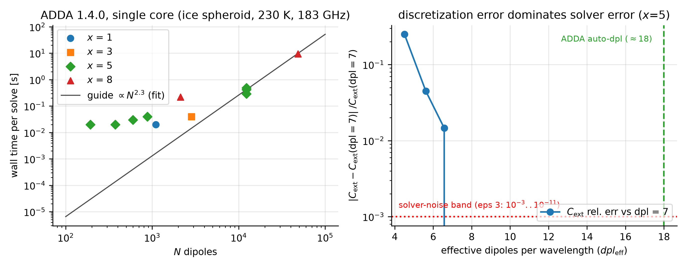
Fig. 4 — one ADDA solve: cost and error budget. *Left panel: wall time grows like
\(N^{2.3}\) with dipole count — the cost-planning input. Right panel: at \(x=5\), the Cext error
from dipole resolution (\(dpl_{\mathrm{eff}}\), x-axis) stays 2–3 orders of magnitude ABOVE the
solver-noise band (red dotted line, -eps 3): the shape-file resolution class — not -eps —
is what sets accuracy. (Data: oblate spheroid 1.0/0.5, Matzler ice 230 K, 183 GHz,
analysis/phase4b_bench_results.json.) *
Key references: Yurkin & Hoekstra 2011, JQSRT 112, 2234–2247; ADDA manual
adda/doc/manual.pdf and adda_1.2/doc/manual.pdf.
Every geometry is a pair of sibling files in adda_shape_files/<habit>/:
Dmax00013um_Dveq00010um_Mass4.79983e-13kg_Freq0192.000GHz.adda ← dipole positions (x y z, one per line, lattice units; 1 header line)
Dmax00013um_Dveq00010um_Mass4.79983e-13kg_Freq0192.000GHz.meta.mat ← MATLAB metadata struct 'meta'
The .meta.mat (read with acf.loadmat) drives all size/frequency bookkeeping.
Fields actually consumed by the pipeline: diameter_vol_eq [m], diameter_max [m],
frequency_min [Hz], N_dipoles, mass [kg], lambda_dpl (=\(\lambda\) at fmin, m — used to
fill the SSDB dpl field), plus provenance (habit_id, source, medium, …).
A .adda without its .meta.mat sibling is invisible to the pipeline (the configs
glob *.mat for the size tables).
The model is cubes on a cubic lattice. Mirrors map the lattice onto itself — which is
exactly what the symmetry-flag tests of §1.7 exploit. Rotations by non-multiples of 90°
never do, so a voxelized hexagon is never an exactly C6-symmetric model; ideal-shape
C6 exists sub-voxel only, and exploiting it would cost a boundary-layer discretization
error. This is why rotation symmetries (sym_Zobj) are parked while mirror symmetries
are exploited.
adda_shape_files/ is untracked and gitignored: 1.8 GB of input geometry (970 .adda +
970 .meta.mat, six habit folders). It was committed in the initial snapshot and purged
from the entire repository history on 2026-11-10 — it was 95 % of the object store and its
largest blob (170 MB) exceeded GitHub's 100 MB push limit (findings + gate table: report §10).
analysis/inventory.py,
baselines/make_baseline.py and the gate suites glob this folder, so nothing that touches
a habit runs until it is populated — git clone alone is not enough.<repo>/adda_shape_files/ keeping the layout
<habit>/Dmax…_Dveq…_Mass…_Freq…GHz.adda + sibling .meta.mat (any missing sibling makes
that size invisible to the pipeline, see above). Authoritative sources, in order of trust:
1. the pre-purge git bundle ../DDA-prepurge-2026-11-10.bundle — byte-verified archive of
all 1940 files: git fetch <bundle> refs/heads/main:refs/heads/prepurge-backup then
git archive prepurge-backup adda_shape_files | tar -x -C . (then drop the temp ref);
2. the HPC working copy under the cluster prefix (Mistral/Thunder — confirm the exact path
before relying on it);
3. this checkout's own working tree.sh
find adda_shape_files -type f | wc -l # expect 1940 = 970 .adda + 970 .meta.mat
python analysis/inventory.py # habit×size×frequency table must be non-empty
git add -f defeats the ignore rule and reintroduces the
unpushable 170 MB blob). If the geometry ever needs versioning, use a separate data repo or
a citable archive (zenodo), not this history.Each physical size ships as several shape files tagged with frequency_min:
N_dipoles is fixed per file — ADDA is never asked to resample; it rescales the
geometry (-eq_rad) so the same dipole array represents the particle at any \(\lambda\);Two regimes exist in practice (measured on HongPlate_Id9, fig. right panel):
| particle | classes | N_dipoles across classes |
|---|---|---|
| small (10 \(\mu\)m) | 5 | identical (1015 in all five — degenerate copies: even the coarsest lattice already exceeds the needed dpl) |
| mid (341 \(\mu\)m) | 5 | 1258 for classes 192/337/457, then 2740, 6255 |
| large (2596 \(\mu\)m) | 5 | 27 644$\to \(165 072\)\to \(379 780\)\to \(1 184 589\)\to $2 956 210 ( \(\approx\) \(f_{\min}^{3}\)) |
Also note: class availability can be per-size incomplete (e.g. HexPlaAgg 197 \(\mu\)m has only the 671 and 887 classes), so never assume five files per size.
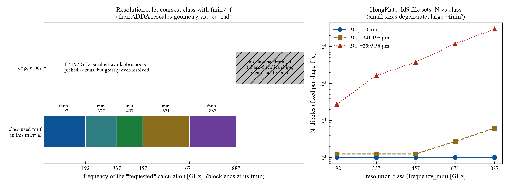
Fig. 3 — Which shape file computes a given (size, f). Left: a requested frequency falls
in one colored block; that block's fmin class file does the run (block label sits at its
right edge). The two edge cases are annotated. Right: measured N_dipoles per class for three
real HongPlate sizes — small particles are degenerate (one lattice already suffices), large
ones grow \(\\propto f_{\\min}^3\).
adda_main_control.py)For each (size, f): among the files of that physical size, the code picks the coarsest
class with fmin \(\ge\) f (df = fmin−f; df[df<0]=inf; argmin); every other file of that
size prints “wrong particle realisation” and skips. Consequences, precisely:
df all-∞ the raw control code would accidentally pick
the first file in folder order; the analysis replicas (phase5_backlog_inventory.py)
additionally guard if not np.isfinite(df).any(): continue. In production the x-cap
removes these combinations anyway (HongPlate's 886 GHz < 887 class).size_parameter_limit \((=10)\) → skip (146 of
HongPlate's 8925 (size,f) combos; the majority of combos are killed by resolution
bookkeeping, not by x — 7701 by the fmin rule; report §1.7).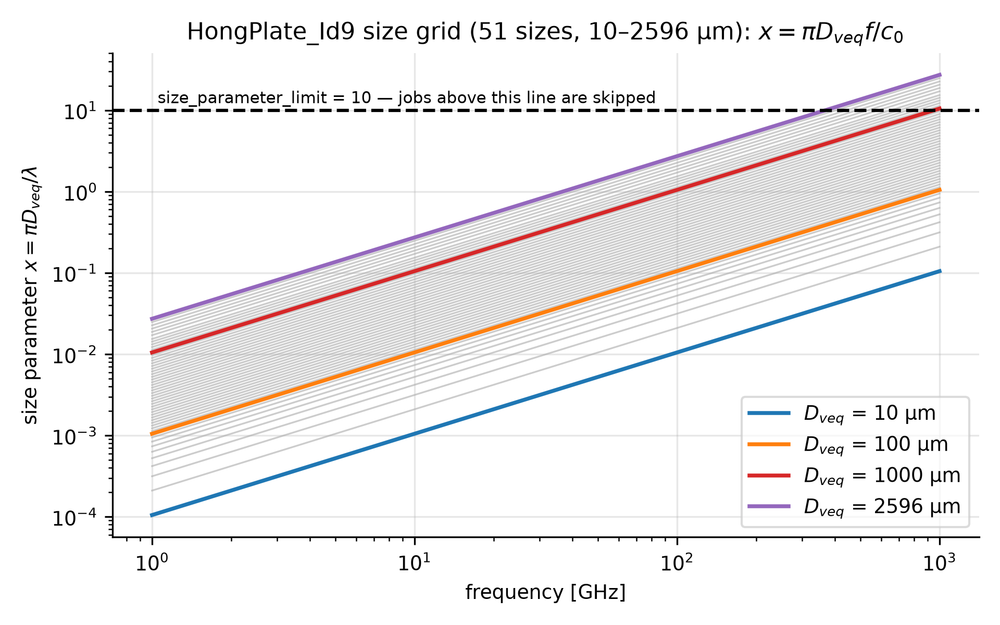
Fig. 2 — What the x-cap actually removes. Each line is one particle size (\(x=\\pi D_{veq}f/c_0\\propto Df\), straight in log-log). Everything above the dashed \(x=10\) line is skipped: for HongPlate that is 146 of 8925 (size, f) combinations — far fewer than the 7701 killed by the resolution rule of Fig. 3.
All ice habits use the Mätzler (2006) parametrization, implemented in
acf.eps_ice_matzler06(f, TK) (adda_control_functions.py:1068–1103):
Valid for 0.01–3000 GHz, 20–273.15 K (raises otherwise). It returns the complex
permittivity, not the refractive index — callers compute \(m=\sqrt{\varepsilon}\) and
hand -m m_re m_im to ADDA. Note the absorption is strongly frequency-dependent (loss
\(\propto 1/f\) at low \(f\), \(\propto f\) at high \(f\)) and strongly temperature-dependent:
the imaginary part at
190 K vs 270 K differs by orders of magnitude — hence the three production temperatures
{190, 230, 270} K are not a formality; each (T, f, size) is a separate ADDA job.
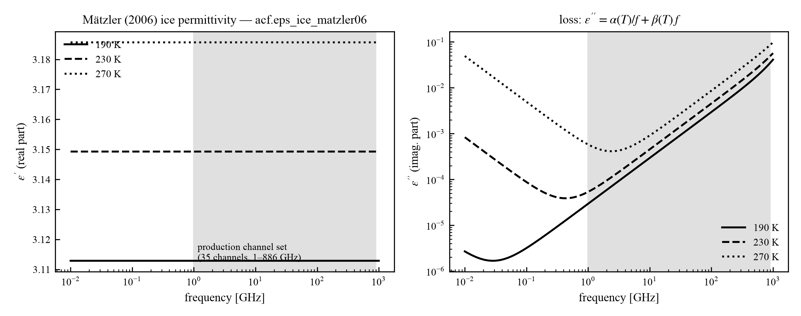
Fig. 1 — Mätzler ice permittivity across the whole valid range. Grey band: the production channel set (35 frequencies, 1–886 GHz). Reading: the real part (left) barely moves (≈3.11–3.19, only with T); the imaginary part (right) spans ~4 orders of magnitude in f and T — the loss tangent at mm/sub-mm wavelengths is what makes cloud ice a microwave-radiometry issue at all, and why each (T, f) pair is its own ADDA job.
Each ADDA solve produces two parsed artifacts (parsing in acf.adda_call,
adda_control_functions.py:198–236 — positional, column indices hardcoded; re-verify
when switching ADDA versions, report §1.3):
ampl_scatgrid — the complex amplitude matrix S(f̂) on the scattering grid.
Row 0 = forward direction ( \(\theta\)=0). Column layout (real/imag pairs) is not in
textbook order:| cols | quantity |
|---|---|
| 0, 1 | \(s_{22}\) |
| 2, 3 | \(s_{11}\) |
| 4, 5 | \(s_{12}\) |
| 6, 7 | \(s_{21}\) |
From the forward amplitudes the extinction matrix ( \(4\times4\), units
\(\mu\text{m}^2\)) is built via the Mishchenko (2002) optical theorem construction —
amplitudes scaled by \(\lambda/(-2\pi i)\), then \(K\cdot=\lambda\)
(acf.extinction_matrix, :40–80). The ARO pipeline's
C_ext comes entirely from this grid column — which is why -Csca and -alldir_inp
were removed from all ARO configs (Phase 3): nothing ever parsed them.
mueller_scatgrid — the 16 Mueller-matrix elements \(M_{11}\)…M44 (row-major) on the
scattering grid from scat_params.dat: 181 \(\theta\) (0–180°) \(\times\) 361 \(\varphi\) (0–360°), 1°
resolution; col 0 = \(\theta\), col 1 = \(\varphi\) (degrees). This is the angular scattering
signature of one fixed particle orientation — the object that §1.6 expands in
spherical harmonics. The \(\theta/\varphi\) here live on a grid attached to the propagation
direction — a crucial fact for the mirror transforms of §1.7 (\(\theta\) is never remapped).
Backscatter slice (Phase 6) — from the same mueller_scatgrid, acf.adda_call
additionally returns
- back_matrix: the 4×4 element vector at Θ=180°, Φ=0° (exact backscatter), and
- back_mat_ring: the full Φ ring at Θ=180° (needed for the mirror fill-in and the
convention analysis, §1.7).
These are raw, k-normalized values (dimensionless \(|f|^2\)-like — not µm²/sr; the
unit conversion \(\lambda^2/4\pi^2\) happens only in rawdata2average). adda_call raises
if the scat grid has no Θ=180 row or Φ=0 column — the production 181×361 grid has both.
This exact-direction matrix travels through the stack outside the spherical-harmonic
route: Brath et al. (2020) flag SH phase functions as unreliable at the exact backscatter
direction, so the exported backMat_data (SSDB, §1.8) is the trustworthy value there.
The orientation averaging uses aoa.pol_changer_back with the convention
\(B_{\mathrm{lab}} = R(+\varphi_{\hat n})\,B_{\mathrm{raw}}\,R(+\varphi_{\hat k})\) — the
opposite rotation sign to the extinction branch (the scattered Stokes basis is attached
at \(-\hat v\); pinned by gate scan, report §6.2: every alternative convention scores ≥31×
worse).
The two output flags -scat_matr both request amplitude + Mueller; -store_scat_grid +
-scat_grid_inp scat_params.dat request the grid itself. The geometry of both angular
coordinate systems — the lab-frame incidence/tilt angles and the propagation-attached
scattering grid — is shown below:
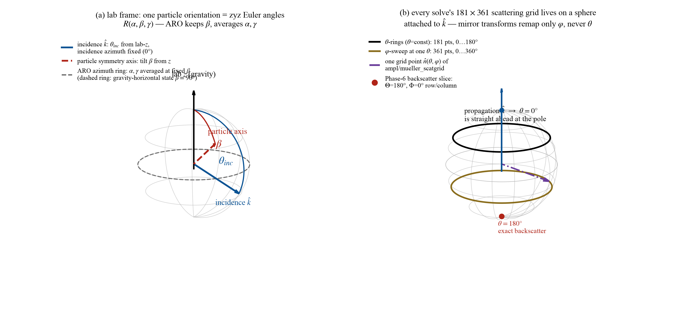
Fig. 8 — the two coordinate systems you must not confuse. (a) lab frame: the incidence direction \(\hat k\) (\(\theta_{\mathrm{inc}}\) from lab-\(z\), azimuth fixed) and the particle symmetry axis (tilt \(\beta\)); ARO averages the azimuth/spin Euler angles \(\alpha,\gamma\) at fixed \(\beta\). (b) every solve's \(181\times361\) amplitude/Mueller grid lives on a sphere attached to \(\hat k\) — \(\theta=0°\) is the forward pole, and the red pole (\(\Theta=180°\), \(\Phi=0°\)) is the Phase-6 backscatter slice. This is also why the §1.7 mirror transform remaps only \(\varphi\).
A real cloud contains particles in many orientations. The observed scattering is the orientation average of the single-particle Mueller matrix. Euler angles are taken in ADDA's zyz convention ( \(\alpha\) about lab-\(z\), \(\beta\) about the line of nodes, \(\gamma\) about the particle's own \(z\)), i.e.
Source methodology (ARO): the TRO/ARO classification, the zyz Euler convention, the \(\alpha\)/\(\gamma\)-averaging at fixed tilt \(\beta\), and the resulting ARO dependence on (\(\beta\), \(\theta_{\mathrm{inc}}\), scattering angles) follow Brath et al. (2020, AMT 13, 2309–2333) — the foundation paper of this project's ARO approach (see References). Their hexagonal-plate / plate-aggregate ARO database itself builds on the shape and frequency/temperature setup of Eriksson et al. (2018, ESSD 10, 1301–1326), which is also where the habit IDs used in this repo (
HongPlate_Id9,HongColumn_Id7, …) originate.
| ARO | TRO | |
|---|---|---|
| free orientation parameters | tilt \(\beta\) of the particle axis; azimuth ( \(\alpha,\gamma\)) averaged | all of \(\alpha,\beta,\gamma\) |
| physically motivated state | axis horizontal: \(\beta=90^\circ\) (gravity-brained crystals) | freely tumbling particle |
| what is produced | the full grid \(\beta\in[0^\circ,180^\circ]\) (19 values) — users weight the tilt distribution downstream | orientation-independent result (integrated inside ADDA) |
| weighting | uniform in \(\alpha,\gamma\) at each \(\beta\) | uniform over the rotation group |
The SSDB represents the ARO state on a 2-D output grid ( \(\beta\), \(\theta_{\mathrm{inc}}\)): \(\beta\) = tilt of the particle axis from vertical (0–180°, 19 output values), \(\theta_{\mathrm{inc}}\) = angle between the incoming plane wave and the lab-z axis (0–180°, 19 output values, azimuth of incidence fixed to 0 — the remaining azimuthal randomness is what makes it "azimuthally random"). The \(\alpha\) and \(\gamma\) integrations are performed numerically (Gauss–Legendre) at every ( \(\beta\), \(\theta_{\mathrm{inc}}\)) node.
Critical design fact (Phase-4b, report §4b.1): the \(\beta\) and \(\theta_{\mathrm{inc}}\) grids are SSDB output coordinates, not quadrature axes. The number of ADDA solves is set solely by the icosphere orientation-vertex grid (§1.5.2) — changing
number_of_betasor the incidence-angle resolution does not save or cost ADDA solves. And the tempting “half-range reuse” symmetry (solve \(\beta\)<90° and mirror to \(\beta\)>90°) is provably wrong (measured discrepancies \(2.3\cdot 10^{-3}\)…\(7.2\cdot 10^{-2}\) vs \(10^{-11}\) solver noise,analysis/phase4b_halfrange_check.py).
One ARO job (one T, f, size) samples particle orientations as the vertices of a
refined icosahedron on the unit sphere. A vertex is the incidence direction: ADDA is
called with -prop vx vy vz (fixed particle attitude -orient 0 0 0, beam coming from
the vertex direction). Vertex counts per refinement level \(L\):
per vertex: ADDA solve → parse Mueller grid → SH-expansion (§1.6) → per-vertex NetCDF
cache. The full \(\alpha\)/\(\beta\)/\(\gamma\) machinery then reconstructs the orientation average by rotating
this vertex-resolved data set (ico.rotate_vertices + barycentric interpolation on the
rotated icosphere + Stokes polarization-basis rotation aoa.pol_changer).
Inside adda_sub_control_spharmonics.py (:629–814) the extinction matrix is averaged
at each \((\beta,\theta_{\mathrm{inc}})\) node with Gauss–Legendre (GL) quadrature in
\(\alpha\) and \(\gamma\):
for every \(\beta\) (from number_of_betas, 5) and \(\theta_{\mathrm{inc}}\)
(incidence_angles, 10 values): rotate the vertex set by
\((\alpha,\beta,\gamma)\) → barycentric interpolation of the extinction matrix at the
incidence direction → Stokes polarization-basis rotation → GL-weighted sum over
\(\gamma\), then over \(\alpha\).
The Mueller SH-coefficient averaging happens later, in post-processing
(aoa.rawdata2average, joblib-parallel, output re-gridded to the 19$\times $19 SSDB grid).
The icosphere level \(L\) is refined until the averaged extinction matrices stop changing:
at least 3 passes (\(L=0,1,2\)), at most limit_sph \((=4)\).
Note the two different accuracy controls and what each drives:
| knob | drives | tolerance |
|---|---|---|
delta |
icosphere orientation refinement (# ADDA solves) | 0.01 on averaged extinction |
eps_sphexp |
per-vertex spherical-harmonic truncation of the Mueller grid | 0.005 rel. to \(M_{11}\) RMS |
-eps |
ADDA internal solver residual | \(10^{-3}\) (noise floor, §1.1) |
| strategy | mechanism | yields | status |
|---|---|---|---|
ADDA built-in -orient avg <avg_params.dat> |
Romberg integration over \(\alpha\),\(\beta\),\(\gamma\) inside ADDA; writes integrated mueller (2° \(\theta\)-grid) + CrossSec* files |
cross sections and orientation-averaged Mueller | production for TRO (Phase-5 decision, report §5.1) |
| own sampling + SH expansion (icosphere, as ARO) | same machinery as ARO but full Euler coverage | Mueller grids → SSDB | reserved for hypothetical TRO grid products; not needed for the backlog |
Hard constraint discovered in Phase 3: ADDA 1.4/1.5 reject -orient avg combined with
-scat_grid, -Csca or -alldir — built-in averaging never produces per-angle
scattering grids (the integrated mueller is a separate product). The avg file (zyz,
per-angle Romberg control Jmin/Jmax/eps/equiv/periodic) for the production habit —
adda_aux_input/HongPlate_Id9_TOR_sizegrid/avg_params.dat:
| Euler angle | range | \(J_{\min}/J_{\max}\) | tol. | equiv | periodic | note |
|---|---|---|---|---|---|---|
| \(\alpha\) | \(0\dots360^\circ\) | 2 / 5 | 0 | true | true | periodic → trapezoid + Richardson |
| \(\beta\) | \(0\dots90^\circ\) | 2 / 4 | \(10^{-6}\) | false | false | XY-mirror fold (§1.7!) |
| \(\gamma\) | \(0\dots360^\circ\) | 2 / 4 | \(10^{-6}\) | true | true |
Folding \(\beta\) to 0–90° is only legitimate because the voxel set is XY-mirror closed
(closure 1.000 on the TOR grid). It was gated against the full-range file
(avg_params_fullrange.dat): CrossSec rel-diff \(\le1.35\cdot 10^{-5}\) (= the Romberg tolerance itself),
Mueller \(\le10^{-13}\) → the fold is exact to integration accuracy
(analysis/phase5_tro_beta_gate.py, PASS, report §5.3).
Every ADDA solve returns the Mueller grid \(M_1,\dots,M_{16}(\theta,\varphi)\) on the
scattering grid — \(181\times361\) static in production, or the size-parameter-adaptive
grid of §1.6.1. Rather than storing
130k floats $\times $16 per vertex, the pipeline stores a spectral representation per vertex
(spherical_harmonics_for_adda.py):
shtns.sht(ntrunc, ntrunc, 1, sht_orthonormal | SHT_NO_CS_PHASE) —
orthonormal, no Condon–Shortley phase; input field interpolated from the \(\theta\)-grid onto
Gaussian latitudes;per Mueller element the absolute target is
\(\varepsilon_m = \operatorname{RMS}(M_{11})\cdot\)eps_sphexp; the returned relative
error is \(\delta[M_m]/\operatorname{RMS}(M_{11})\);
- if the round-trip passes at full truncation, a binary search finds the smallest
ntrunc still meeting eps_m — coefficient counts are per-vertex and adaptive;
- coefficients are stored as complex64 (this sets the floor of export precision;
map_sphexp/reshape_sphexp_2_common_exp later remap every ( \(\beta\),\(\theta_{\mathrm{inc}}\)) node's
coefficient set into one common shtns layout).
Why expand over scattering angles at all? Because the orientation average at a rotated
orientation is then a Wigner rotation of coefficients, and phase-matrix products
needed by radiative transfer stay fast; the post-processing additionally re-expands the
averaged phase matrix on the fly to eps_phase=0.001 on the 19$\times $19 grid (§3.3 step 2).
The static \(181\times361\) grid grossly over-samples small-\(x\) solves. With
scatgrid_adaptive=True (config switch, §3.1; still OFF in production habit configs
— probe configs adda_config_phase8_hp_{adaptive,static}.py only) the per-run
scat_params_adaptive.dat is generated from the size parameter \(x=\pi D_{veq}/\lambda\):
nphi = 2·ntrunc_cap + 2, endpoint excluded
(\(\varphi_{max}=360-360/n\varphi\)); ntrunc_cap = ceil(6·(x+4x^{1/3}+2)) — the
scattering grid must accommodate \(2\,n_{\text{trunc}}\) longitudes (§1.9.3 for why
\(n_{\text{trunc}}\propto x\)). A duplicate \(\varphi=0/360\) row injects FFT aliasing
error \(\propto\Delta\varphi^2\) (measured \(3.2\cdot10^{-2}\) twin failure), and odd
rings break the Phase-4 mirror \(\varphi\)-index map (180° must be a ring node);spha.sph_expansion initial truncation is \((n_{lons}-1)//2\) (shtns needs
\(n_\varphi>2m_{max}\) on even rings; identical value 180 for the static grid);size_parameter, scatgrid_ntrunc_cap,
scatgrid_adaptive); measured per-solve speedups ~8–17× at small \(x\), ~2× at \(x=5\);acf.scatgrid_ntrunc_cap(x, margin=export_sph_margin=10) — beta files became
15× smaller with bitwise-identical kept content (gate
analysis/phase8_export_twin.py, report §8.8).If the voxel set is invariant under reflection at a coordinate plane of the particle frame, the Mueller grid of the mirrored orientation is obtained from the solved one by an exact index/sign transform — the ADDA solve is skipped and the vertex is filled.
Verified transform (acf.MIRROR_*, adda_control_functions.py:1252–1289; derived
empirically, analysis/phase4_grid_symmetry.py, residual \(\le3\cdot 10^{-11}\) at -eps 3):
| mirror (plane) | axis flipped | scattering-grid remap | Mueller element signs |
|---|---|---|---|
| XY (\(z\to-z\)) | \(z\) | \(\varphi\mapsto 180^\circ-\varphi\) | for an odd number of mirrors: element-wise sign by \(\mathbf{d}\mathbf{d}^{\top}\) with \(\mathbf{d}=(1,1,-1,-1)\) (outer product on the Stokes row/col pairs) |
| XZ (\(y\to-y\)) | \(y\) | \(\varphi\mapsto-\varphi\) | |
| YZ (\(x\to-x\)) | \(x\) | \(\varphi\mapsto-\varphi\) | (even number of composed mirrors → identity sign) |
\(\theta\) is never remapped — mueller_scatgrid lives on a propagation-attached
grid; only \(\varphi\) moves. Fill-in mechanics in the sub-control (:265–322, :414–419): vertices on the
negative side of an enabled plane are solved only if no fill exists yet (_runfirst
ordering guarantees every mirrorable vertex is filled before it is reached; a missing
fill can never silently produce NaN); the image vertex is found by nearest-vertex lookup
(warns if snapping exceeds \(10^{-3}\) rad); the filled grid is re-expanded in SH and cached
like a solved vertex.
Backscatter ring (Phase 6): the Θ=180° Φ-ring of a skipped vertex is reconstructed from
the source ring by the same φ remap times the elementwise sign rule
\(\mathbf{D}\mathbf{D}^{\top}\), \(\mathbf{D}=(1,1,-1,-1)\); the back matrix itself is the Φ=0°
element of the filled ring. Verified exactly on directly-computed XY twin vertices
(filled vs computed agree to \(10^{-25}\) absolute — dropping the sign rule leaves \(2\cdot10^{-13}\)
at a \(3.6\cdot10^{-11}\) scale). Note \(\mathrm{ring}(180°,180°)=\mathrm{ring}(180°,0°)\) (basis
π-rotation = conjugation by \(-\mathbf I\)), so the elementwise M**Nsym rule is exact even
for XY (whose φ map sends 0°→180°).
Precondition — voxel closure. A flag is legal only if the voxel set itself is
mirror-closed, and closure is resolution-dependent — measured by
analysis/phase4_symmetry.py (figure): a fill across a non-closed mirror is a real
shape error (HongPlate coarse-class YZ: 0.986 closure → \(1.5\cdot 10^{-4}\) Mueller field error
vs \(4.5\cdot 10^{-12}\) when closed), not solver noise. Hence flags must be set from the coarsest
resolution class of the size grid.
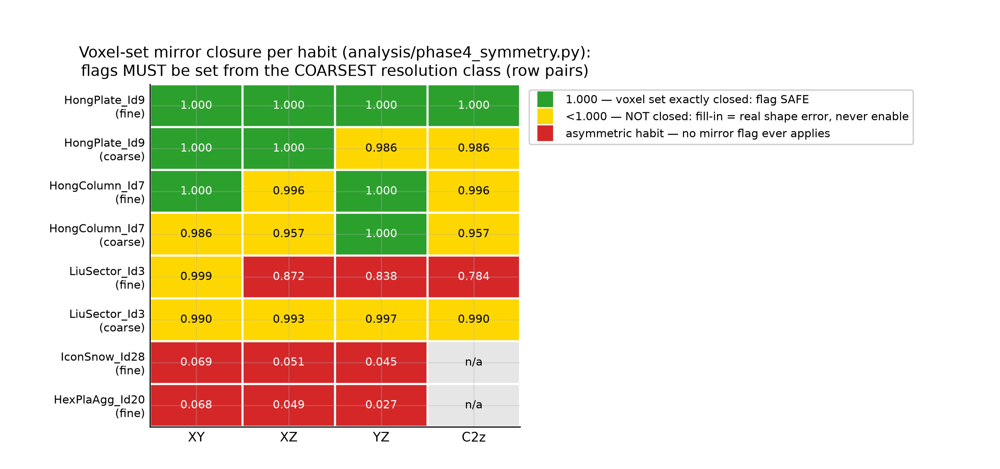
Fig. 6 — the mirror-flag decision table (traffic-light = the rule itself). Green: voxel set exactly closed (1.000) at that resolution → flag may be enabled. Amber: <1.000 → the fill-in would reconstruct voxels that do not exist = a real SHAPE error, never enable — note how a mirror can be closed at fine resolution but broken at the coarsest class, which is why flags follow the coarsest row of each pair. Red: habit intrinsically asymmetric.
Production flags (report §4.7): HongPlate_Id9 + TOR grid: XY+XZ=true, YZ=false; HongColumn_Id7: YZ=true; LiuSector/Icon/HexPlaAgg: none (aggregate/snowflake shapes break all mirrors). Measured effect (§4.8):
| habit | solves | wall |
|---|---|---|
| ellipsoid gate (3 mirrors) | 162 \(\to\) 27 (+135 fills) | 3.0\(\times\) |
| HongPlate_Id9 (XY+XZ) | 642 \(\to\) 177 (+465 fills) | 1.73\(\times\) |
| HongColumn_Id7 (YZ) | 642 \(\to\) 337 (+305 fills) | 1.39\(\times\) |
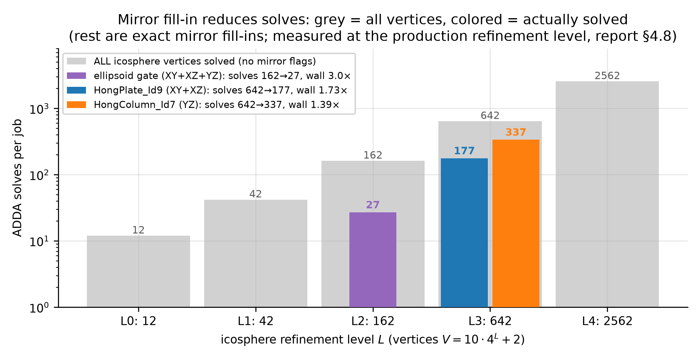
Fig. 5 — what mirror fill-in buys (measured). Grey bars: every icosphere vertex solved (no flags). Colored bars: actual ADDA solves with the habit's flags at that level — the rest of the vertices are exact mirror fill-ins (still SH-expanded + cached, hence the wall-time gain in the legend is smaller than the solve-count ratio).
Wall gain is below the solve-count ratio at probe size because the per-vertex work
(SH expansion + cache write) still happens for fills; at production \(x\approx10\) the ADDA solve
dominates and the ratio closes. sym_Zobj (\(C_n\) rotation) is parked: exact \(C_{2z}\) itself is
resolution-dependent (HongPlate: 1.000 fine / 0.986 coarse), and the cube-lattice model
never realizes ideal \(C_6\) exactly; XY+XZ fill-in already implies exact \(C_{2x}\) anyway.
Post-processing turns the per-job store into ARTS-SSDB NetCDF — the format of
the published ARTS Microwave SSP Database, whose TRO generation is documented in
Eriksson et al. (2018, ESSD 10, 1301–1326); the ARO extension of that format is
documented in Brath et al. (2020, AMT 13, 2309–2333). Our writer version is
beta_0.9.1 (Phase-6 additive backscatter variables; the 7 parallel variable lists
all grow in lockstep). One file per
( \(\beta\), size, f, T) under a nested tree:
<adda_results>/SSD/Azimuthally_random/ice/Aggregate/Pristine/HongPlate_Id9/
AzimuthallyRandom_beta090deg/
Dmax00019um_Dveq00017um_Mass1.086e-11kg/
Freq166.900GHz_T270K.nc
Physically meaningful content per file (all spectral, units \(\mathrm{m}^{2}\)):
phaMat_data_real/imag — phase-matrix spherical-harmonic coefficients,
dims (16 Mueller elems \(\times\) 1 az-inc \(\times\) 19 za_inc \(\times\) n_sph_coeffs);extMat_data — extinction-matrix elements (K11, K12, K33) on the (az, za_inc) grid;absVec_data — absorption vector (2 elems), computed as \(C_{\mathrm{ext}}-C_{\mathrm{sca}}\) from the
spectra, with a negative-a1 rescale diagnostic (§3.3);backMat_data + backMat_index (Phase 6) — the orientation-averaged exact-backscatter
Mueller matrix, m²/sr, dims (phaMatElem × aa_inc × za_inc); backMat_index is the fixed
identity pairing like phaMat_index. This is the spectrally independent backscatter
value (not reconstructed from the phase matrix, §1.4 item 3); NaN-filled for stores that
predate Phase 6;ShapeData scalars: diameters, mass, dpl, N_dipoles, refractive index (real/imag),
plus provenance attrs (refrIndex_model='Maetzler2006', habit id/name, source file);CalculationData attrs (provenance of the run): ADDA version, cluster, n_cores,
ADDA_eps, Refinement_delta, Mueller_sph_eps, Phase_sph_eps, symmetry flags,
shtns version.The derived quantities consumers usually want (C_ext, SSA, asymmetry parameter g) are
not stored — they are computed downstream by the published-DB tooling
(arts-sspdb-interface/). Full variable table: Appendix C.
Status: scanned and gated end-to-end (2026-11-09, analysis/phase9_fwdmodel_scan.py,
plan plans/forward_peak_plan.md, report §9) — no pipeline code changed. This section
develops the idea the way a textbook would: §1.9.1 fixes the amplitude language, §1.9.2
derives why a large particle must have a narrow forward peak, §1.9.3 turns the peak width
into a spectral-order budget, §1.9.4 presents the model/residual split, §1.9.5 derives the
model itself and its validity conditions, §1.9.6 reports the measurements, and §1.9.7 the
verdict.
Everything below speaks in terms of the complex far-field amplitude. With \(k=2\pi/\lambda_0\) the scattered field of one solve is written, in the usual far-field notation,
where \(f\) is the \(2\times2\) amplitude (Jones) matrix in the local scattering basis. This is
exactly the object the pipeline already parses: the columns of ADDA's ampl_scatgrid are the
Bohren–Huffman (BH) elements \(s_1..s_4\) under the standard \(k\,f\) normalization (§1.4). The
measured quantity is the Mueller matrix, a quadratic function of the amplitude,
which is what gets expanded in spherical harmonics and stored (§1.6). The third player is the optical theorem, which extracts extinction from the amplitude linearly:
where \(\hat s\) is the propagation direction of the incident beam — Eq. (1.9.3) is precisely the
Mishchenko construction behind acf.extinction_matrix (§1.4). Note the contrast that will
control everything in §1.9.4: \(M\) is quadratic in \(f\), \(C_{\mathrm{ext}}\) is linear in \(f\).
Two limiting regimes of \(f(\hat n)\):
Classical result (van de Hulst; B&H): for \(x\to\infty\) the extinction cross section of any particle tends to twice its geometric projected area \(G\): \(C_{\mathrm{ext}}\to 2G\). Pure ray tracing through the particle removes only \(G\) — the geometric shadow — so where does the other half come from? Babinet's principle answers: the shadow behind the particle must be dark, which requires a field radiated by the particle silhouette that is exactly \(\mathbf E^0_{\text{inc}}\) out of phase there — and any field that cancels the incident wave at \(\hat n=\hat s\) must, by conservation, reappear as coherent scattering into the forward direction. For a silhouette (aperture) \(A\) with eikonal amplitude transmittance \(e^{i\Delta(\rho)}\), \(\Delta=k(m-1)\ell(\rho)\), the diffracted amplitude is, up to a sign convention fixed by the §1.9.5 anchor,
Insert the black-screen limit (\(1-e^{i\Delta}=1\)) into the optical theorem (1.9.3): \(f_{\text{diff}}(\hat s)=ikA/2\pi\) gives \(C_{\text{ext,diff}}=(4\pi/k)(kA/2\pi)=2A\) — a perfectly black screen of area \(A\) extinguishes \(2A\): the paradox, and with it the statement that the forward peak alone carries \(C_{\mathrm{ext}}\to2G\).
Fourier duality fixes the peak's width. An aperture of projected radius \(a_\perp\) radiates into a cone of half-angle
so the peak narrows like \(\lambda_0/D\): for a sphere (\(a_\perp=D_{veq}/2\), \(x=\pi D_{veq}/\lambda_0\)) the first minimum sits at \(\theta_1\approx 220°/x\) — verified in Fig. 13b (the dashed rings at \(44°\) for \(x=5\), \(22°\) for \(x=10\)). The sidelobes beyond the peak are set by the projected silhouette, not by \(D_{veq}\) — for plate habits the silhouette changes strongly with orientation, which is why the peak structure is orientation-dependent.
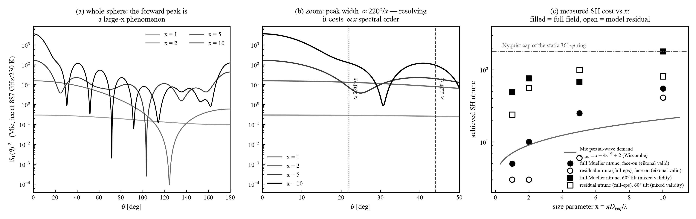
Fig. 13 — why the diffraction peak is the cost driver. (a) exact-Mie \(|S_1|^2\) over the
whole sphere for four size parameters — the spike appears only at large \(x\); (b) zoom on
0–50°: the peak width shrinks like \(220°/x\); (c) achieved SH truncation order per production
cell vs \(x\): filled blue markers = today's full-field cost (grows like the grey Wiscombe
curve and saturates at the red Nyquist cap), open green markers = what a model+residual
split would need instead. Data: analysis/phase9_results.json.
Spherical harmonics up to degree \(n\) form a band-limited function space on the sphere: they cannot represent angular structure finer than
Therefore resolving a peak of width \(\theta_1\propto1/x\) requires, for any numerical method,
The rigorous version of the same law for spheres is the Mie partial-wave demand — \(n_{\max}=x+4x^{1/3}+2\) (Wiscombe; the \(x^{1/3}\) term is the edge/"creeping-ray" boundary layer) — and it is the same law the Phase-8 grid budgets use (§1.6.1). The measured per-vertex ntrunc of the production pipeline follows it (Fig. 13c) and even saturates the static grid's Nyquist cap (ntrunc 179 ≈ 180 = the cap of the 361-point \(\varphi\)-ring) at \(x=10\), tilted orientations.
Why this is a cost statement: the SH coefficient count per vertex scales \(\propto n_{\text{trunc}}^2\)
(storage in mueller_data.nc, per-vertex caches), as do the shtns analysis/synthesis and the
Wigner rotations of the orientation average (§1.5–1.6). The diffraction peak is the single
biggest data/cost item at large \(x\) — and (1.9.7) says numeric sampling of the peak can never
be made cheaper. The only remaining lever is to stop storing the peak numerically.
Radiative-transfer has long "renormalized" the forward peak away (the δ-Eddington / δ-M trick: replace the peak by a delta function and preserve its lowest moments — at the cost of angular resolution inside the peak). The Phase-9 idea does the opposite: keep the peak fully resolved, but represent it by an analytic formula that is re-evaluated on demand, and store numerically only the remainder. Formally, split the amplitude field
with \(F_{\text{model}}\) analytic (§1.9.5) and \(g\equiv f-F_{\text{model}}\) the residual. Only \(g\) needs a grid and SH storage. Three structural facts make this safe — or dangerous, if misapplied:
$$ M[f] \;=\; M[F_{\text{model}}] \;+\; M[g] \;+\; 2\,\mathrm{Re}\bigl(F_{\text{model}}\otimes g^{*}\bigr). \tag{1.9.9} $$
The cross-term is \(\mathcal O(|F||g|)\) — near the peak, where \(|F|\) is largest, it is comparable to \(M[F_{\text{model}}]\) itself. Storing "\(M - M[F_{\text{model}}]\)" numerically would therefore require the consumer to carry \(F\) anyway and would destroy the interference structure. Keeping \((F_{\text{model}},g)\) keeps everything algebraically exact. 3. Extinction comes out of the same identity for free. The optical theorem (1.9.3) is linear in \(f\):
$$ C_{\mathrm{ext}}[f] \;=\; C_{\mathrm{ext}}[F_{\text{model}}] \;+\;\frac{4\pi}{k}\,\mathrm{Im}\bigl[\hat s^{\dagger} g(\hat s)\hat s\bigr], \tag{1.9.10} $$
and \(F_{\text{model}}(\hat s)\) is analytic — the forward-amplitude column of §1.4 survives the split.
The error rule follows immediately from fact 1: the reconstruction error is the SH truncation error of \(g\), an absolute quantity, so the residual's truncation target must be measured against the full field's intensity scale,
This "full-eps" rule is the single most consequential methodological finding of Phase 9A; the historic own-eps rule (§1.6) silently misprices residuals — a worked example in §1.9.6.
The model must exist for arbitrary voxel habits at arbitrary orientations (exact Mie exists only for spheres), and it must be cheap and orientation-local. The construction has three steps.
Step 0 — an exact starting point. For a particle of constant refractive index \(m\), the scattered far field is produced by the polarization current \(\mathbf P=(m^2-1)\mathbf E\) inside the volume. Taking the far-field limit of the radiation integral gives an identity with no approximation at all, provided the true internal total field is inserted:
(Complex amplitude shorthand; applied per polarization channel like (1.9.1).) This is the standard "distorted-wave" representation: everything hard is hidden in \(E_{\text{tot}}\).
Step 1 — the eikonal approximation to \(E_{\text{tot}}\). Approximate the internal field by a plane wave that accumulates the optical path along each incident straight ray: with foot point \(\boldsymbol\rho\) in the screen plane through the scatterer center perpendicular to the incidence direction \(\hat s\), arc length \(s\) along the ray, and \(\ell(\boldsymbol\rho)\) the chord length through the exact voxel set on that ray,
Single pass, straight rays: no refraction (bending), no internal reflection, no internal
multiple scattering. Crucially, \(\ell(\boldsymbol\rho)\) is ray-marched voxel-exactly from
the shipped .adda file — the geometry enters without any fitted ellipsoid or screen-plane
shortcut, which is what makes the model habit-general.
Step 2 — carry the ray integral into (1.9.12). With \(\mathbf r=\boldsymbol\rho+s\hat s\) and \(\mu=\hat n\cdot\hat s=\cos\theta\) the volume integral factorizes into a screen integral of a ray integral:
The bracket (the code's \(G(\mu,\boldsymbol\rho)\), evaluated chunked over screen pixels so the
huge \((n_\mu\times n_\rho)\) matrix never materializes) is the full-angle form: replacing
\(\mu\to0\) inside the bracket recovers textbook Fraunhofer diffraction at a phase-modulated
screen (the eikonal transmittance \(e^{i\Delta}\) of (1.9.4) reappears; for small phase delay
\(\psi\) (below) the two agree up to constants absorbed into the calibration). Keeping \(\mu\)
is what makes \(F_{\text{model}}\) defined over the whole \(4\pi\) grid rather than only a small
cone, degrading gracefully away from the forward direction. In the project's
\(k\,f\)-normalized ADDA convention the implementation evaluates the prefactor as
\(k^{3}/4\pi\) — i.e. \(S_{\text{model}}=k\,F_{\text{model}}\) — so it can be compared and
calibrated directly against the parsed ampl_scatgrid columns.
One global calibration constant \(c\). Per run (\(T\), \(f\), size), a single complex number is least-squares-fitted in amplitude space (never log space — the model's zeros poison log fits) between \(c\,F_{\text{model}}\) and the full ADDA grid. Physically \(c\) absorbs the local-field/depolarization correction that any distorted-wave ansatz misses: on a voxel sphere at \(x=0.3\) the fit returns \(|c|=0.614\), close to the exact uniform internal-field (Clausius–Mossotti) factor \(3/(m^2+2)=0.582\); at production \(x\) the eikonal limit is asymptotically right and the anchors give \(c=1.005-0.006j\) (\(x=1.9\)) / \(1.008-0.011j\) (\(x=3.8\)) — a \(|c-1|<1\%\) agreement, cross-\(x\) drift \(0.55\%\).
Why the conventions must be pinned first. The cross-term in (1.9.9) has amplitude
\(2|F||g|\cos(\text{phase slip})\): a phase slip of even a few mrad between the analytic model
and ADDA's grid rotates part of "\(-F\)" into "\(+F\)" and turns the subtraction into an
addition precisely where the field is strongest. The scan therefore anchors every
convention on the one shape where truth is analytic (sphere, exact Mie — triple-validated
scipy == mpmath == miepython == published Wiscombe MIEV0 case-14, \(\le5\cdot10^{-16}\); the
B&H 5.12 log-derivative \(D_n\) recurrence in analysis/phase6_backscatter.py is confirmed
correct, gotcha §D-24). Anchor results (G1, all PASS): ADDA's ampl_scatgrid columns = BH
\(s_1..s_4\); ADDA's far-field phase origin = scatterer center (fitted offset \(u_0=0.000\)
lattice units — the earlier "bbox corner" hypothesis is dead); ADDA \(C_{ext}\) vs analytic at
dpl 70 agrees to 0.23 % (\(x=1.9\)) / 1.33 % (\(x=3.8\)) — DDA discretization level; and a
Mueller grid rebuilt from the parsed amplitudes matches ADDA's own mueller_scatgrid to
\(\le7.4\cdot10^{-11}\) (port check).
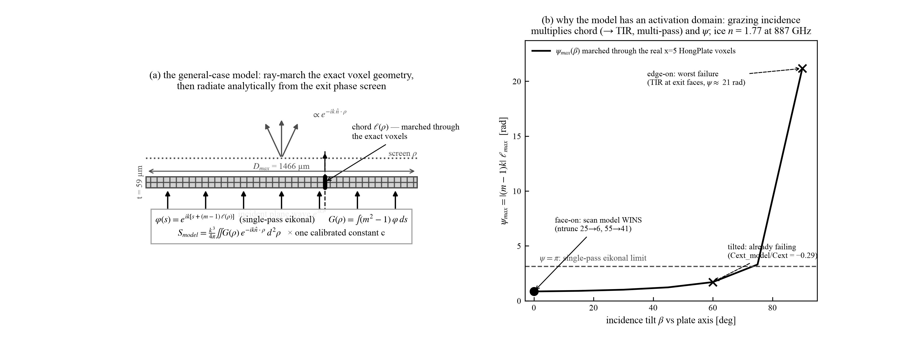
Fig. 14 — the model: what it is, and the one knob that says when it works. (a) schematic on the real x=5 HongPlate slab: march every ray through the exact voxels to get the chord \(\ell(\rho)\), radiate analytically from the exit screen; (b) the phase thickness \(\psi_{max}\) marched through the real voxels vs incidence tilt: below the green \(\psi=\pi\) line the single-pass eikonal picture is plausible, far above it (edge-on) the model is guaranteed to fail. Ice refractive index at 887 GHz makes even a 541 µm plate "optically thick" edge-on.
Validity conditions (textbook: van de Hulst / B&H, "diffraction approximation"). The single-pass eikonal (1.9.13) is justified only if
$$ \psi(\boldsymbol\rho) \;=\; \bigl|(m-1)\,k\,\ell(\boldsymbol\rho)\bigr| \;\lesssim\; \pi , \tag{1.9.15} $$
because once \(\psi>\pi\), internally reflected / totally internally reflected multi-pass fields reorganize the exit field with interference structure that (1.9.13) cannot represent at any calibration; - (c) the silhouette is well resolved — satisfied automatically (voxel-exact marching).
\(\psi_{max}\) is computed for free by the same ray-march. Measured on the real \(x=5\) HongPlate voxels at 887 GHz (Fig. 14b): \(\psi_{max}\approx0.7\) rad face-on, \(\approx2\) rad at \(60°\), \(\approx21\) rad edge-on — versus the \(\pi\) single-pass limit: valid face-on, hopeless edge-on.
Scan design (plan §9A): analysis/phase9_fwdmodel_scan.py, ADDA 1.4.0 on the production
static \(181\times361\) grid and the production command mirror (-shape read, -eps 3,
\(\texttt{eq\_rad}=D/2\)), Matzler ice at 230 K. Cells: HongPlate_Id9 at 887 GHz (the size
grid hits \(x=1,2,5,10\) exactly: \(D_{veq}=108/215/541/1078\;\mu\)m) \(\times\) orientations
{face-on, \(60°\) tilt, edge-on} — the \(x=1\) edge-on cell is skipped (sub-wavelength slab,
degenerate) — plus HongColumn_Id7 at \(x=2\) and \(x\approx4.9\) \(\times\) {along-axis, \(60°\)}:
15 cells. Per cell: calibrate \(c\); split (1.9.8); measure the residual fraction
\(\lVert g\rVert/\lVert f\rVert\) (amplitude L2); re-expand the residual with the production
expansion rule (expand_mueller_2_spharmonics, eps_sphexp=0.005) under both the own-eps
and the full-eps criterion (1.9.11); sanity-check \(C_{ext,\text{model}}/C_{ext,\text{ADDA}}\).
Full table: report §9.2 / analysis/phase9_fwdmodel_table.txt.
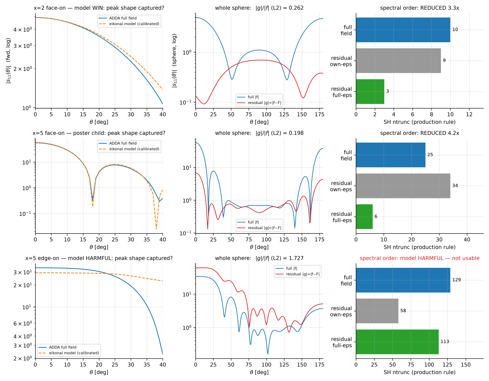
Fig. 15 — the three verdicts, per real production cell (row = cell). Column 1: does the calibrated model reproduce the forward peak? Column 2: whole sphere — blue = full field, red = what would have to be stored after subtracting the model; if red exceeds blue (edge-on row), the split makes storage WORSE. Column 3: SH order actually needed: green bar (full-eps rule, Eq. 1.9.11) vs blue full-field bar — the grey own-eps bar is shown only to expose how misleading that rule is (see the metric rules below).
Three archetypes emerge (Fig. 15):
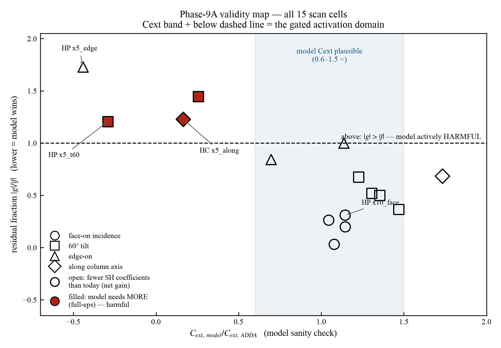
Fig. 16 — the gated activation domain for all 15 scan cells at a glance. A cell is usable only if it sits in the green band (\(C_{ext,\text{model}}\) sane, 0.6–1.5×) AND below the dashed line (residual smaller than the field). Colors: green = fewer SH coefficients than today, red = the model would need MORE (harmful). Marker shape = incidence orientation (legend bottom-left): every face-on cell is green, every tilted/edge-on cell drifts up and right — hence "gated", not blanket.
Crucially, validity is measurable without the full field, i.e. cheaply per solve: the fitted calibration magnitude \(\lvert c_{\text{fit}}/c_{\text{global}}\rvert\) deviates strongly exactly in the broken cells (dev \(>1.4\): \(x=2\) edge 5.2, \(x=5\) edge 6.4, \(x=10\) edge 4.0, HC \(x=5\) along 0.14), and \(C_{ext,\text{model}}\le0\) or \(<0.5\times\) flags them independently. Under the full-eps criterion, ntrunc is reduced in 10 of the 13 cells with \(x\ge2\) (ratios 0.24–0.96); all three losses are validity-broken cells.
Two metric rules decide all of these numbers (and any future hybrid must respect them):
Backscatter: the model contributes nothing at \(\theta=180°\) (its field is off by
\(10^{-2}\dots8\times\), no consistent scale — the eikonal single-pass picture has no account
of the coherent retro-reflection): the Phase-6 exact backMat_data route (§1.4, §1.8) stays
mandatory and a hybrid would exempt that ring, as Brath et al. (2020) already flag the
exact-backscatter direction as unreliable in the SH route anyway.
Conditional GO — a per-cell gated hybrid, not a blanket subtraction. The validity
domain of §1.9.5–1.9.6 is real but orientation-dependent, and §1.9.6 showed it is detectable
from cheap per-solve observables. Design sketch (report §9.4): per (vertex, β) decision from
\(c\)-fit consistency, the \(C_{ext,\text{model}}>0\) sanity band, and the \(\psi\) bound
(1.9.15) — deciding model+residual vs plain full field; mixed runs store the per-cell flag
in the nc metadata; rawdata2average reconstructs \(f=F_{\text{model}}+g\) on load.
Where the payoff lands, in the language of §1.9.3:
Verified call graph (report §1.1, line numbers re-verified against current files):
Solve phase (one job per T, f, size):
Post-processing phase (run later, per habit — see §3.3):
Gotchas specific to TRO (all verified): the mistral batch branch of
adda_call_randomorient raises NotImplementedError (never was implemented — now loud
instead of a swallowed NameError); there is no completion-skip logic (every listed
index is re-run); liste row 8 must carry the temperature (9-row format) or the
folder gets named with the flat index as T####K (a loud warning guards this legacy
path); deq in the folder name receives the equivalent radius (legacy naming).
Idempotency layers (ARO): (1) job-level — main control skips a (T,f,size) if the
folder contains at least one *mueller_data.{xml,pkl,nc} and force_new=False;
(2) vertex-level NetCDF cache (survives a killed/restarted job, deleted only when
the job completes); (3) within a refinement pass, vertices identical to the previous
icosphere level reuse cached expansions without touching ADDA.
TRO has none — plan reruns accordingly.
The final per-run Mueller store <shape>_mueller_data.nc (Phase 7) is one file per
(T, f, size): one group per computed icosphere vertex (name = temp-cache
vertex_X… id), holding the complex64 SH coefficients (mueller_sph, stored losslessly
as float32 pairs), relerror, ext_mat, back_mat, and the explicit sph_l/sph_m
coefficient-index arrays; the group attr vertex_index is the sole ordering key (never
trust group iteration order). Written atomically (.tmp + os.replace). Legacy .pkl
stores are still readable (deprecation warning; migrate with
analysis/migrate_pkl_to_nc.py); legacy .xml is not readable anymore. Vertex-cache
stores that predate Phase 6 lack back_mat — both cache-check sites then treat them as a
cache miss and re-run ADDA, so a resumed old store can never silently yield NaN back
data (full schema: report §7.1).
| module | role | status |
|---|---|---|
adda_main_control.py, adda_sub_control_spharmonics.py |
ARO driver + per-job solver | active |
adda_main_control_rndorient.py, adda_sub_control_randomorient.py, acf.adda_call_randomorient |
TRO driver (-orient avg) |
active (Phase-3 repaired) |
adda_control_functions.py (acf) |
ADDA CLI wrapper, Matzler dielectric, Romberg helpers, mirror transforms, NetCDF cache, MATLAB reader | active |
spherical_harmonics_for_adda.py (spha), icosphere_grid.py (ico) |
SH machinery, orientation grids | active |
adda_orientational_avg_spharmonics_functions.py (aoa) |
post-processing averaging / phase-matrix re-expansion | active |
adda_process_aro_particles[.py/_single.py], adda2SSDBnetcdf_functions.py, definitions_for_netcdf.py |
post-processing + SSDB export | active (export gated behind env SSDB_EXPORT_NETCDF=1) |
adda_sub_control_gridref.py, acf.romberg_alpha/gamma, adda_orientational_avg_spharmonics_for_testing.py |
old grid-refinement experiment | deprecated — do not extend |
posix_spawn.py |
fast process spawn (Linux ctypes; macOS subprocess branch) | active helper |
memory.py, sbatch_adda |
legacy helpers | dormant |
old_configs/, SSD_scripts_deprecated/, NetCDF_export_testscript*.py |
archives / one-off test scripts | archive — never import |
Every habit has one adda_config_<habit>.py; the control scripts inject it with
exec('from adda_config_X import *') and read its globals. Keep field names when
copying a config — the drivers getattr-probe them. The canonical reference is
adda_config_HongPlate_Id9.py. Annotated field → consumer map:
| config global | meaning | consumed by |
|---|---|---|
calc_type ('mistral'/'thunder'/'local') |
host mode; local = Phase-3 no-queue macOS branch (repo-relative paths, direct sub.check_call) |
both main controls, sub-controls, export provenance |
prefix, prefix_data, main_path, ramdrive |
storage roots (local: repo-relative; ramdrive=None → system temp) |
sub-controls (job folders, ADDA -dir) |
adda_prefix, cluster_name |
ADDA checkout root; SSDB provenance string | export CalculationData |
adda_binary, adda_launcher, adda_version |
ADDA executable triple; env overrides ADDA_BINARY/ADDA_VERSION apply on top; sub-controls fall back to 1.2 defaults if a config lacks these |
both sub-controls via main_command = launcher + [binary] |
shape_name, shape_foldername, shape_path, subpath, shapelist, shape_str |
habit + geometry file list (shape_str=[] \(\Rightarrow\) -shape read <file> is prepended) |
main/sub controls, export meta lookup |
Sizes, Dmax, fmin (arrays parallel to .mat files) |
physical size grid + resolution classes (read from *.meta.mat with acf.loadmat) |
job loops + selection rule |
frequencies (Hz), temperatures (K) |
the production channel set (35 channels 1–886 GHz \(\times\) 3 T for HongPlate) | job loop; dielectric evaluation |
size_parameter_limit (=10) |
x-cap | main control skip |
number_of_betas (=5), incidence_angles (10 vals) |
ARO output coordinate resolution during solve-averaging (post-processing re-grids to 19$\times $19) | sub-control averaging stage |
delta (=0.01), limit_sph (=4) |
icosphere orientation convergence / max level | sub-control refinement loop |
eps (=3) |
ADDA solver residual exponent | acf.adda_call -eps |
eps_sphexp (=0.005) |
per-vertex Mueller SH truncation target | spha.expand_mueller_2_spharmonics |
sym_XYobj, sym_XZobj, sym_YZobj |
mirror fill-in flags — must be set from the coarsest resolution class (§1.7, analysis/phase4_symmetry.py) |
sub-control skip/fill logic; export provenance |
alpha_0/beta_0/gamma_0 (0/0/0) |
base particle attitude handed to -orient |
sub-control |
force_new (False) |
recompute even if completed-marker exists | main control idempotency |
ZIPPING (False) |
keep per-vertex ADDA output in zips (auto-deleted if False) | acf.adda_call |
scat_param_path, static_clo |
ADDA static flags: -store_scat_grid -scat_grid_inp <scat_params.dat> -scat_matr both (-Csca/-alldir_inp removed — never parsed) |
acf.adda_call |
TRO only: liste (9 rows!), num_chunks, batch_time, avg_param_path |
flat job table (rows: shape, eq radius m, eps, m_re, m_im, \(\lambda\) m, shape file, batch time, T K) + chunking + avg file | rndorient pair |
HPC: ncores, Partition |
Slurm sizing | sbatch wrappers |
adda_main_control.pyPart 1 — startup and the nested loops:
Part 2 — resolution-class selection, idempotency check, dispatch:
⚠ local mode runs thousands of jobs synchronously in one foreground process. For anything beyond smoke tests, deselect sizes/frequencies in a probe config or run the vertex loop in parallel (see §3.6).
adda_sub_control_spharmonics.py (per T, f, size)Part 1 — init and the icosphere vertex loop, per refinement level L = 0… (min 3 passes,
max limit_sph = 4):
Part 2 — orientation average, refinement loop, outputs:
The mirror-fill transform ( \(\varphi\) remap + Stokes signs + SH re-expansion) is sketched in
§1.7; the same vertex grid also answers interpolation_weights_icosahedric_grid queries
during the averaging stage — barycentric interpolation, aoa.pol_changer for the Stokes
polarization basis.
Run by hand per habit (or per folder) — this is deliberately decoupled from the solves:
Notes: the 19$\times $19 ( \(\beta\), \(\theta_{\mathrm{inc}}\)) grid and eps_phase=0.001 are hard-coded in
adda_process_aro_particles.py:74–107 (independent of the solve-time 5$\times $10); the SSDB
export is off by default (SSDB_EXPORT_NETCDF=1 to enable); the habit processed is
env-selected SSDB_HABIT=<habit> (default HexPlaAggCrystal_Id20). The negative-a1
rescale is a physical-consistency repair: where the spectral C_sca exceeds C_ext the
whole phase matrix at that node is scaled down; check the printed diagnostics — a large
frac_of_neg_a1 means the truncation error eps_sphexp/eps_phase is fighting you.
Gate artifacts kept in analysis/: phase5_tro_beta_gate.py/.log ( \(\beta\)-fold equivalence),
phase5_tro_probe.log (ADDA accepts the avg files in 1.2/1.4/1.5).
Python env — mamba env DDA (py3.12): conda-forge numpy scipy netcdf4 joblib
matplotlib fftw pkg-config; pip typhon==0.10.0 shtns (shtns: no osx-arm64 conda
build; native wheel — rebuild with pip install --no-build-isolation --no-deps shtns
while fftw+pkg-config are present). Never downgrade typhon (0.8.0 is broken on 3.12;
ty.arts.xml is gone — Mueller artifacts are NetCDF4 *_mueller_data.nc, Phase 7).
ADDA build (works identically for adda_1.2, adda_1.4, adda/; never run the
checked-in Linux ELF binaries under adda_1.2/src/):
cd adda_1.4/src && make cleanseq # stale Linux .d files break make otherwise
make seq "OPTIONS=NO_FORTRAN" \
FFTW3_INC_PATH=$CONDA_PREFIX/../envs/DDA/include \
FFTW3_LIB_PATH=$CONDA_PREFIX/../envs/DDA/lib
# make links WITHOUT rpath → relink with rpath so dyld finds libfftw3.3.dylib:
cd seq && gcc -o adda *.o -L<env>/lib -Wl,-rpath,<env>/lib -lm -lfftw3
(NO_FORTRAN is fine: only IGT/surface modes need Fortran; the pipeline uses -int defint
default.)
Running a smoke job locally:
mamba activate DDA
cd adda_python_scripts
python adda_main_control.py # pick the config index when prompted
# cross-version experiments without editing configs:
ADDA_BINARY=../adda_1.4/src/seq/adda ADDA_VERSION=1.4.0 python adda_main_control.py
The config local branch maps prefix→adda_python_scripts/, prefix_data→repo root,
so results appear under ./adda_results/…. Keep probes small: one config with 1 T,
1–2 frequencies, 1–2 sizes (see adda_config_phase*_…py for probe patterns).
force_new=True forces recompute; otherwise completed jobs are skipped.
/work/um0878/…, /scratch/uni/u237/…),
ramdrive=/dev/shm…, Slurm Partition, ncores; submission goes through the
site-specific sbatch_simple* wrappers (paths hard-coded in the main controls).adda_1.2/src/mpi/adda_mpi via
srun -n N); the production decision is 1.4.0 — build an MPI 1.4 binary on the
cluster and flip the triple, or export ADDA_BINARY/ADDA_VERSION.adda invocations inside each (T,f,size) job rather than one MPI-parallel solve; keep
the adaptive icosphere refinement sequential (it is a decision loop, not a loop nest).fig07; the 1.4/1.5 trees also
accept the old CLI subset unchanged (report §1.3 compatibility audit) except the
-orient avg + grid-flag conflict (§1.5.5).baselines/)The frozen regression reference: 6 ADDA cases mirroring the exact CLI pattern of
acf.adda_call (-orient 0 0 0, -prop 1 0 0, -eps 3, Matzler ice at 230 K):
sphere (independent Mie check), oblate ellipsoids x=0.1/1/5, HongPlate_Id9 Dveq10 \(\mu\)m at
192/337 GHz. Current golden: baselines/adda_1.4.0/ (regenerated 2026-11-06);
adda_1.2/ archived for provenance. Case results, Mie validation and scattering-pattern
figures: Appendix E; narrative report: baselines/REPORT.md.
python baselines/make_baseline.py --adda <adda-seq-binary> --out baselines/<tag>
python baselines/check_baselines.py baselines/<tag> # analytic sanity (sphere/Mie etc.)
The gate rule is noise-based, never bit-level. Measured ADDA re-run scatter of
identical commands at -eps 3: 0.0 for four of six cases, \(\le 10^{-11}\) generally,
but \(8.3\cdot10^{-4}\) for the \(x=5\) case (12 312 dipoles at residual \(10^{-3}\)).
Therefore regression tolerances are: \(10^{-10}\) for small cases, \(5\cdot10^{-3}\) for
\(x=5\). Any stack change (numpy/scipy bump,
ADDA switch, symmetry fill-in) must land inside those bands. Do not regenerate goldens
casually; a new golden requires re-deriving the noise budget.
| gate | command / artifact | result |
|---|---|---|
| Phase-2 numpy-2 migration | analysis/phase2_equiv.py (pre/post pickles) |
pipeline bit-identical on numpy 2 / py3.12 / macOS |
| ADDA 1.2 vs 1.4.0 vs 1.5.0-alpha3 | analysis/phase3_equiv.py, phase3_results.json |
ext rel-diff \(3\cdot 10^{-17}\)…\(2.5\cdot 10^{-4}\), mueller \(\le5\cdot 10^{-4}\) (all below the \(5\cdot 10^{-3}\) noise bound; x5 numbers below 1.2's own scatter); auto dipole density identical across versions; TRO -orient avg CrossSec bit-identical → production binary: 1.4.0 |
| mirror machinery (sym vs asym, same config otherwise) | analysis/phase4_subcontrol_gate.log, phase4_aoa_gate.log |
identical within \(4.5\cdot 10^{-12}\) with closed mirrors; a non-closed mirror (coarse YZ, closure 0.986) produces \(1.5\cdot 10^{-4}\) field errors — proof the closure gate is load-bearing |
| half-range \(\beta\)/\(\theta\) reuse hypothesis | phase4b_halfrange_check.py/.log |
rejected:\(2.3\cdot 10^{-3}\)…\(7.2\cdot 10^{-2}\) discrepancy vs \(10^{-11}\) noise |
| TRO \(\beta\)-fold (0–90° avg file vs full range) | phase5_tro_beta_gate.py/.log |
CrossSec \(\le1.35\cdot 10^{-5}\) (= Romberg tol), Mueller \(\le10^{-13}\) → PASS |
| ADDA cost/accuracy | phase4b_adda_benchmark.py, …_bench_results.json |
fig. 04; error budget discretization-dominated |
| backscatter matrix (Phase 6) | analysis/phase6_backscatter.py, phase6_results.json |
Mie pole agreement + convention pin + mirror-ring rule + SSDB backMat round-trip — all PASS |
| Mueller artifact → NetCDF4 (Phase 7) | analysis/mueller_nc_roundtrip_check.py (20/20), analysis/mueller_nc_gate.py (W/X/R/E gates) |
nc round-trip bitwise lossless; probe run + double-reader (nc vs legacy pkl) averaged dicts, phase chain and 5-file SSDB export (125 vars) bit-identical; 12/12 local .pkl artifacts migrated + bitwise-verified |
| analytic-grid twin (Phase 8) | analysis/phase8_scatgrid_twin.py, phase8_endtoend_twin.py, phase8_export_twin.py |
adaptive vs static grid: all PASS (margin ≥4); full-pipeline 22×42 vs 181×361 twin: d_ext \(7.6\cdot10^{-16}\), d_sph \(1.9\cdot10^{-3}\); export cap keeps content bitwise, 15× smaller beta files |
| forward-peak convention anchor (Phase 9A) | analysis/phase9_fwdmodel_scan.py (G1), phase9_results.json |
Mie triple-anchor ≤\(5\cdot10^{-16}\); ADDA Cext vs analytic 0.23%/1.33% at dpl 70; calibration c=1.005/1.008 (cross-x dev 0.55%); far-field origin = scatterer center (0.000 lattice); port check ≤\(7.4\cdot10^{-11}\) |
Harness lessons that produced false failures — remember them when writing new gates:
auto dpl is quantized (a \(10^{-8}\) \(\lambda\) typo changes N_dipoles and breaks comparisons —
compute \(\lambda\)/eq_rad exactly like make_baseline.py), and a scalar theta=90.0 emits
z=6.12e-17 instead of exact -prop 1 0 0, rotating the \(\varphi\) reference (up to \(2\cdot 10^{-2}\) Mueller
difference at x=5 — use the vector branch). Third trap (report §8.8/§9.2): relative
per-element gate metrics explode on cancellation channels — Rayleigh-limit Mueller
channels are pure noise; gate against the cell's physical intensity scale plus the
store's measured noise plateau.
with the discretization term dominant (design margin \(\ge 10^{-3}\)).
If a consumer complains about smoothness/positivity (negative absorption vector a1), look at the SH truncation terms and the rescale diagnostics (§3.3), not at ADDA.
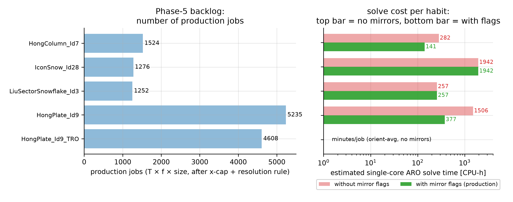
Fig. 7 — size and cost of the remaining production backlog. Left: jobs per habit
(each job = one (T, f, size), already after the x-cap and the resolution rule of Figs. 2–3).
Right: estimated single-core solve time — the gap between the red and green bars is what the
mirror flags (§1.7) save; habits without usable mirrors (Icon/Liu) show no gap. TRO is cheap
by construction (-orient avg inside ADDA).
| config | jobs | mirrors | est. single-core solve-time |
|---|---|---|---|
| HongPlate_Id9 (ARO, full 35-ch grid) | 5235 | XY+XZ (25 % solves) | 377 CPU-h (unmirrored: 1506) |
| HongColumn_Id7 | 1524 | YZ (50 %) | 141 CPU-h (282) |
| IconSnow_Id28 | 1276 | none | 1942 CPU-h |
| LiuSectorSnowflake_Id3 | 1252 | none | 257 CPU-h |
| HongPlate_Id9_TRO | 4608 | ( \(\beta\)-folded avg) | minutes per job |
\(\approx\) 2700 single-core CPU-h total. Runbook: local mode only for probes; production goes
through the sbatch path with 1.4.0-MPI once built on the cluster (§3.6); ARO
post-processing/export per §3.3. Inventory reproducibility:
analysis/phase5_backlog_inventory.py (prints the table above and re-derives the job
list with the exact control-selection logic).
-orient avg output is raw ADDA zips; a parser →
NetCDF step is still to be specified).sym_Zobj parked (§1.7); half-range reuse rejected; GL-node \(\beta\)/\(\theta\) grids rejected
(no solves saved) — do not reopen without new evidence.Full assembled command lines (verified from acf.adda_call / the TRO pair):
ARO solve (per icosphere vertex):
[launcher] <adda_binary> -shape read <file.adda> \
-store_scat_grid -scat_grid_inp <scat_params.dat> -scat_matr both \
-m <Re(m)> <Im(m)> -lambda <µm> -eq_rad <µm, equivalent-volume RADIUS> \
-orient <α0> <β0> <γ0> -prop <vx vy vz (icosphere vertex unit vector)> \
-dir <tmpdir>/temp -eps <3>
TRO solve (per (f, size, T) — orientation averaging inside ADDA):
[launcher] <adda_binary> -shape read <file.adda> \
-scat_matr both -orient avg <avg_params.dat> \
-m … -lambda … -eq_rad … -dir <job folder> -eps <3>
| token | note |
|---|---|
-eq_rad |
equivalent-volume radius ( \(\mu\)m) — Sizes holds diameter, the sub-control halves it; N_dipoles comes from the shape file, ADDA only rescales |
-orient α β γ |
zyz Euler degrees (production 0 0 0); the beam direction comes from -prop |
-prop |
incidence unit vector; always pass the vector branch (a scalar 90° emits z=\(6.12\cdot 10^{-17}\) and rotates the \(\varphi\) reference) |
-store_scat_grid -scat_grid_inp |
181$\times $361° grid from scat_params.dat |
-scat_matr both |
amplitude + Mueller on the grid |
-eps 3 |
residual \(10^{-3}\); noise floor §1.1 |
| removed from configs | -Csca, -alldir_inp (never parsed; 1.4/1.5 flag-combination traps) |
| version caveat | -orient avg cannot combine with -scat_grid/-Csca/-alldir in 1.4/1.5 |
Parsing contract: ampl_scatgrid 1 header line, forward row first, column order
s22, s11, s12, s21 (pairs real/imag); mueller_scatgrid 1 header line, cols \(\theta\), \(\varphi\), then
16 elements row-major — all positional, re-verify on any ADDA upgrade.
The Phase-6 backscatter slice needs no extra CLI token: it is the Θ=180° row ×
Φ=0° column (plus the full Φ ring) of mueller_scatgrid; acf.adda_call raises if the
scat grid (Appendix B) lacks a Θ=180° row or Φ=0° column — the production 181×361 grid has both.
scat_params.dat (adda_python_scripts/, handed via -scat_grid_inp): global_type=grid,
\(\theta\) range N=181 (0–180°), \(\varphi\) range N=361 (0–360°) — 1° resolution; the phi_integr section
belongs to ADDA's internal integration (unused by us since -Csca was removed).
avg_params.dat (adda_aux_input/<habit>/, TRO): per-Euler-angle Romberg spec
min/max/Jmin/Jmax/eps/equiv/periodic (zyz). Production file for the TOR grid folds
\(\beta\) to 0–90° using the XY-mirror closure (equivalence-gated \(\le1.35\cdot 10^{-5}\), §1.5.5); the
full-range twin avg_params_fullrange.dat exists as the gate reference. Rule of thumb
from the file comments: axysymmetrical particles → gamma max=0; equivalence planes →
fold the range.
Filename: Freq{f:08.3f}GHz_T{T:03.0f}K.nc, one per ( \(\beta\), size, f, T), under
SSD/<orientation_type>/<medium>/<crystal_type>/<pristine_type>/<habit>/AzimuthallyRandom_beta{β:03.0f}deg/<Dmax…Dveq…Mass…>/;
root attrs date, version='beta_0.9.1' (Phase-6 additive backscatter bump; the schema
below is otherwise the beta_0.9 format of Brath et al. 2020); groups
SingleScatteringData, ShapeData, CalculationData.
| dimension | length | meaning |
|---|---|---|
sph_coeffs_scat |
common SH layout size | number of shtns coefficients of the phase-matrix re-expansion |
aa_inc |
1 | azimuth of incidence (fixed 0°) |
za_inc |
19 | zenith incidence-angle axis (°) |
phaMatElem / extMatElem / absVecElem |
16 / 3 / 2 | element selectors (ext: K11, K12, K33; abs: 2 elems) |
scatMat_row/scatMat_Col |
4 / 4 | Stokes matrix indices |
SingleScatteringData variables: frequency (Hz), temperature (K), za_inc, aa_inc,
index maps, phaMat_data_real + phaMat_data_imag (float32, \(\mathrm{m}^{2}\), zlib; dims
phaMatElem \(\times\)aa_inc \(\times\)za_inc \(\times\)sph_coeffs_scat), extMat_data ( \(\mathrm{m}^{2}\)), absVec_data ( \(\mathrm{m}^{2}\)),
backMat_data (float32, m²/sr, dims phaMatElem × aa_inc × za_inc) and backMat_index
(int8, 4×4 fixed identity pairing) — the Phase-6 exact-backscatter matrix, stored
independently of the phase-matrix spectra (§1.4 item 3).
ShapeData (0-d): diameter_max, diameter_vol_eq, diameter_area_eq_aerodynamical,
mass, dpl, N_dipoles, refrIndex_real/imag, alpha, beta, gamma + attrs
(shape_file, refrIndex_model='Maetzler2006', habit_id, medium, …).
CalculationData (attrs): method='DDA', software='ADDA', software_version,
system, n_cores, date_completion, ADDA_eps, ADDA_scatParam_file,
ADDA_avgParam_file, Refinement_delta, Maximum allowed refinement level,
Mueller_sph_eps, Phase_sph_eps, sym_XYobj/XZobj/YZobj, shtns version string.
Missing config keys degrade to 'n/a' (getattr(ac, …, 'n/a')) — never crash the export.
Numbered for reference; several carry the bug-fix that neutralized them.
adda_1.2/src/seq|mpi — cluster-built, run nowhere locally. Always rebuild (make seq, NO_FORTRAN + FFTW rpath, §3.5); make cleanseq first or stale Linux .d files abort the build.ampl_scatgrid col order s22,s11,s12,s21!) — re-verify on ADDA upgrades.-eps 3 (up to \(8.3\cdot 10^{-4}\) at x=5) → all gates noise-based.-orient avg + -scat_grid/-Csca/-alldir rejected by ADDA 1.4/1.5.ty.arts.xml is gone — internal Mueller artifacts are NetCDF4 (*_mueller_data.nc, schema in report §7.1; rawdata2average falls back to legacy .pkl with a deprecation warning); idempotency check accepts .nc plus legacy .xml/.pkl names.--no-build-isolation --no-deps) against the env's fftw.np.nan, np.complex128, trapezoid, np.tile; posix_spawn.py has a macOS subprocess branch. Never reintroduce old aliases.adda_sub_control_gridref.py, acf.romberg_*, adda_orientational_avg_spharmonics_for_testing.py, old_configs/, SSD_scripts_deprecated/.liste must have 9 rows (row 8 = temperature). With 8 rows the folder name gets the flat index as T####K — now guarded by a loud warning; rebuild old-style configs instead.deq folder field is the eq radius (legacy).analysis/phase4_symmetry.py when adding or regenerating shape files.=np.array([5,])*1e9 stub configs are pointless work, and analysis/inventory.py's per-file rule counts them as zero (mismatch with the live control's behavior at low f — report §1.7 wording refers to the replica).-prop scalar vs vector branch: always pass the unit vector (scalar 90° \(\Rightarrow\) z=\(6.12\cdot 10^{-17}\) \(\Rightarrow\) \(\varphi\)-reference rotation \(\Rightarrow2\cdot 10^{-2}\) Mueller artifacts in comparisons).export2SSDBnetCDF is off by default (SSDB_EXPORT_NETCDF=1) and habit-selected by SSDB_HABIT; the 19$\times $19 grid + eps_phase=0.001 are hard-coded in adda_process_aro_particles.py.adda_main_control.py on the Mac runs jobs one-by-one in the foreground; use probe configs, and pool single-core ADDA solves if you parallelize (§3.6).<shape>_temp_data_vertex_*.nc deleted at job completion; killing a job mid-way leaves it (useful), completing wipes it (startover of a single vertex re-solves).ZIPPING=True when debugging a solve.adda_results/…), and old HPC results are unrecoverable.back_matrix/back_mat_ring are k-normalized (dimensionless) — never treat them as µm²/sr before the rawdata2average \(\lambda^2/4\pi^2\) conversion. Vertex caches / overview mats predating Phase 6 carry no back keys → treated as cache misses (forced ADDA re-runs); rawdata2average on old stores warns and leaves backMat NaN. The \(B\)-matrix polarization convention is \(R(+\varphi)\) on both sides — using the extinction branch's \(-\varphi\) is wrong (gate floor 3e-2 vs 0.96 error).mueller2phase, known): if a consumer cross-checks backMat vs phaMat($180°-\theta_{\mathrm{inc}}$), expect that floor — backMat at the exact point is the cleaner value (report §6.5).IndexError (not KeyError) for missing variables — the cache readers catch both; a pre-Phase-6 store previously crashed read_data_from_netcdf (caught by the Phase-6 gate).analysis/phase6_backscatter.py) is validated (== 40-digit mpmath == miepython == published Wiscombe MIEV0 case-14). Do not "fix" it with an explicit psi/chi/tau series replacing \(D_n(mx)\) by \(\tau_n'/\tau_n\) — that is not a valid B&H formula (gives negative Qext for lossy \(m\); an earlier debug round chased it). Angular series: \(\pi_n=-\mathrm{lpmv}(1,n,\mu)/\sin\theta\) (scipy lpmv carries the CS phase), \(\tau_n=n(n+1)P_n(\mu)-\mu\pi_n\), pole limits \(\pi_n(\pm1)=\pm n(n+1)/2\) signed.mueller_scatgrid-vs-ampl port check at ≤7e-11 confirms the rest of the frame port).Dveq01078um, not Dveq1078um) — a bare-number glob silently matches nothing (or worse, the wrong class).git filter-repo ends with git reset --hard on a non-bare repo (its cleanup() sets reset = not GitUtils.is_repository_bare(...)), so a path it removes from history is erased from disk — gitignore does not protect it, because gitignore never applies to entries in the index. Hit on 2026-11-10: purging adda_shape_files/ wiped the 1.8 GB live copy (recovered from the pre-purge bundle, 1940/1940 files hash-verified — report §10.4). Rule: untrack first (git rm -r --cached <path> + commit) or rewrite in a bare clone, and always git bundle create ../backup.bundle --all first.adda_shape_files/ is not in git (1.8 GB of external input, purged 2026-11-10, report §10): a fresh clone cannot run any habit config, gate suite or baseline until the folder is provisioned by hand (§1.2 "Shape-data provisioning"; restore recipe also in agents.md). Never git add -f it back — that reintroduces the 170 MB blob and the unpushable history.The frozen regression set behind §4.1: six ADDA runs mirroring the exact CLI of
acf.adda_call (-orient 0 0 0, -prop 1 0 0, -eps 3, Matzler-2006 ice) — three
analytic/analytic-voxel sphere & spheroid cases at \(x\) = 0.31/0.1/1/5 plus two
HongPlate_Id9 (D_veq = 10 µm) production-pattern cases. Current golden:
baselines/adda_1.4.0/; baselines/adda_1.2/ is the archived provenance set —
the figures below are rendered from the 1.2 outputs, but Phase-3 equivalence (§4.2)
proves the 1.4.0 goldens agree within the noise bands. Full narrative:
baselines/REPORT.md.
Cross sections from CrossSec-X/Y; ω = Csca/Cext with Csca from the (then-production)
-alldir_inp Romberg integration — note today's ARO configs no longer request -alldir_inp
(§1.4), these baselines predate that cleanup.
| Case | x | N dipoles | dpl (λ) | Qext (X / Y) | ω (X / Y) |
|---|---|---|---|---|---|
| ice sphere, 300 GHz, 230 K | 0.314 | 2 176 | 160.7 | 6.914e-3 / 6.914e-3 | 0.684 / 0.684 |
| oblate spheroid c/a=0.5, 183 GHz, 253 K | 0.1 | 1 104 | 402.8 | 3.824e-4 / 7.533e-4 | 0.0814 / 0.0820 |
| oblate spheroid c/a=0.5, 183 GHz, 253 K | 1 | 1 104 | 40.3 | 2.630e-1 / 6.612e-1 | 0.957 / 1.003 |
| oblate spheroid c/a=0.5, 183 GHz, 253 K | 5 | 12 312 | 18.0 | 1.574 / 2.217 | 1.569 / 2.091 |
| HongPlate_ID9, Dveq=10 µm, 192 GHz, 230 K | 0.020 | 1 015 | 1947 | 6.516e-5 / 1.015e-4 | 9.19e-4 / 9.35e-4 |
| HongPlate_ID9, Dveq=10 µm, 337 GHz, 230 K | 0.035 | 1 015 | 1109 | 2.052e-4 / 3.195e-4 | 2.77e-3 / 2.82e-3 |
Consistency checks that pass: sphere Qext X ≡ Y to all printed digits (rotational symmetry); every habit case shows the expected X-vs-Y polarization splitting; the two Hong-plate runs differ only via m(f) and the Romberg grid, Qext scaling ≈ ×3.15 from 192→337 GHz (Rayleigh: Cext ∝ Im(m)·f — matches).
Sphere vs. independent Mie theory (Riccati-Bessel in check_baselines.py,
cross-checked against miepython):
| quantity | ADDA (auto grid) | Mie | deviation |
|---|---|---|---|
| Qext | 6.9144e-3 | 6.7929e-3 | +1.79 % |
| Qsca | 4.7310e-3 | 4.6539e-3 | +1.66 % |
| Qabs | 2.1865e-3 | 2.1390e-3 | +2.22 % |
All inside the 3 % acceptance band, and the deviation is confirmed DDA discretization
error: forcing -dpl 320/800 converges Qext 6.914e-3 → 6.852e-3 → 6.819e-3 toward the
Mie value (fig. E-2). Cross-version: ADDA 1.2 vs 1.5.0-alpha3 identical Qext for the
sphere to 12 significant digits; cross-platform: the macOS arm64 rebuild of 1.5.0-alpha3
reproduces the Linux cluster numbers exactly.
Caveats (report §4): ω > 1 at x = 5 is unphysical — Csca exceeds Cext by 68 % at the auto grid (18.0 dpl, outside LDR validity ≲6–10 dpl); the angular integration is fully converged, so this is a dipole-grid artifact. The case remains a valid deterministic regression fingerprint, but its absolute Csca/Qsca/ω are not physics references — the same caution applies to production runs at the large-x end of the backlog (§4.3 discretization-dominant budget). The x=1 ω=1.0025 value is the same effect at 0.2 % — keep it as a regression tripwire.
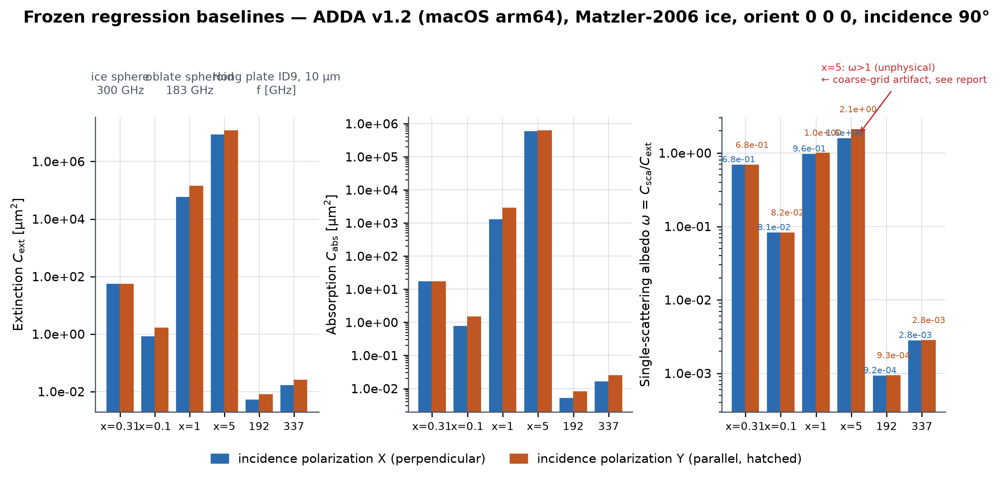
E-1. Cross sections & albedo, X vs Y incidence polarization, all six cases.
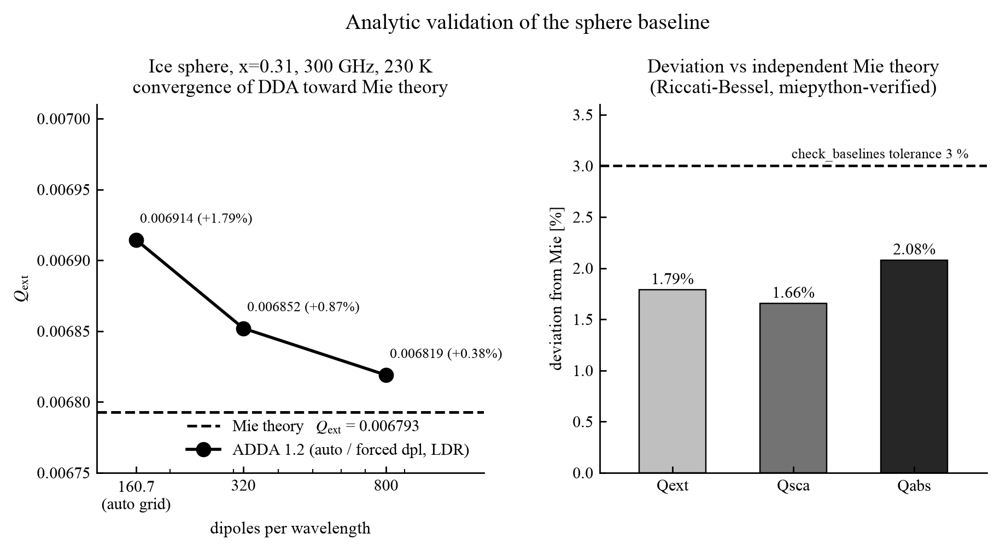
E-2. Analytic validation: the sphere baseline converges toward independent Mie theory with dpl.
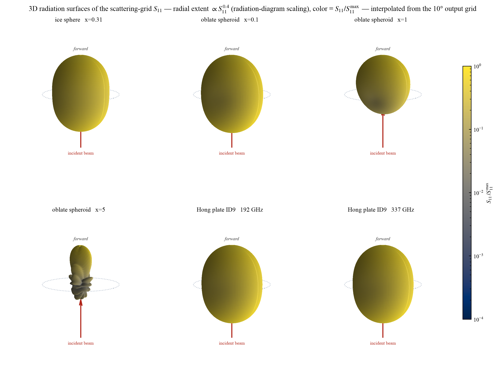
E-3. 3-D radiation surfaces of the scattering-grid \(S_{11}\) (radial extent ∝ \(S_{11}^{0.4}\), color = \(S_{11}\)/max, beam axis marked; interpolated from the 10° output grid). The near-Rayleigh particles (sphere, x=0.1 spheroid, both Hong plates) are essentially isotropic shells; x=1 develops diffraction rings; x=5 shows the classic narrow forward spike with ringed side lobes.
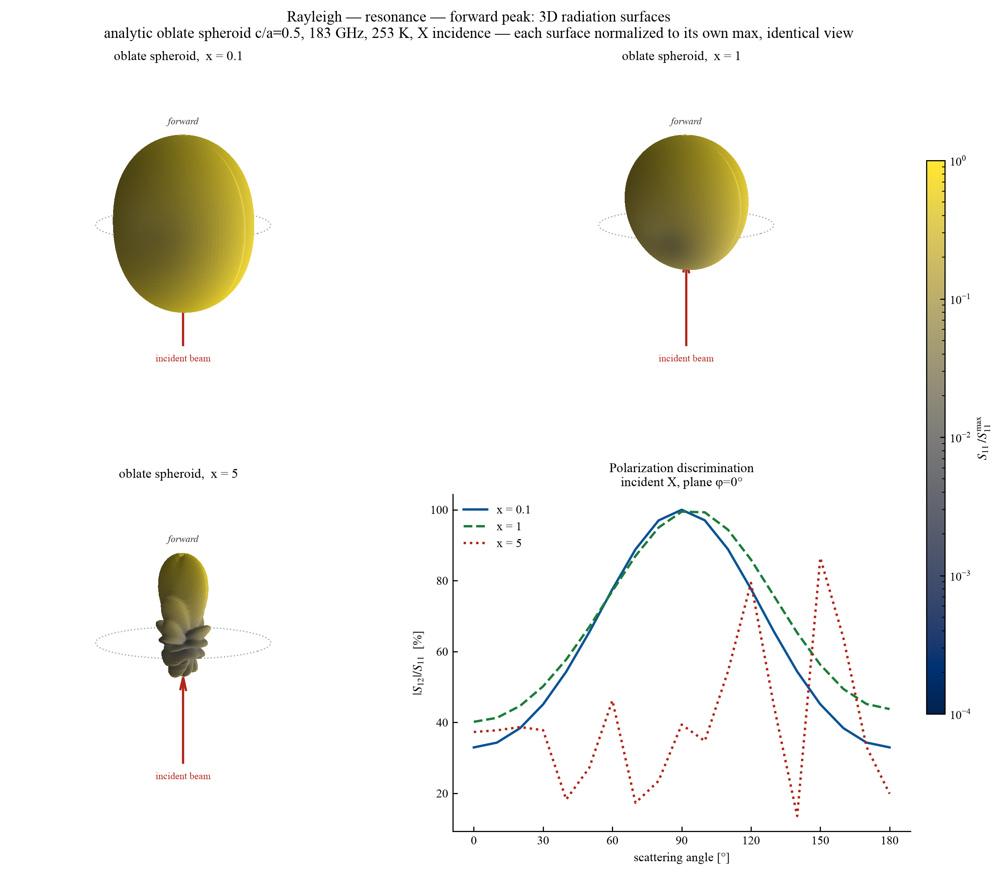
E-4. Rayleigh → resonance → forward-peak evolution of the analytic oblate spheroid (each surface normalized to its own max), plus polarization discrimination \(\lvert S_{12}\rvert/S_{11}\) in the φ=0 plane.
mamba activate DDA
python baselines/plot_baseline_figs.py # figures (PNG 250 dpi + vector PDF, baselines/report/)
python baselines/check_baselines.py # Mie consistency, exit code = pass/fail
python baselines/make_baseline.py --adda <binary> --out baselines/<tag> # rerun cases
python docs/make_figures.py # mirrors the PNGs into docs/figures as fig09..fig12
*_Id<n> folder names), the 35-channel frequency selection, the 190/230/270 K
temperature set, the Mätzler-2006 refractive-index choice, and the SSDB NetCDF format the
export targets (zenodo 1175572, tooling: arts-sspdb-interface/).adda/doc/manual.pdf, adda_1.2/doc/manual.pdf.ampl_scatgrid (§1.4, §1.9.1), the extinction paradox and diffraction-peak treatment (§1.9.2), and the validity conditions of the diffraction/eikonal approximations (§1.9.5).acf.eps_ice_matzler06).acf.extinction_matrix.arts-sspdb-interface/).plans/DDA-modernization-plan.md (approved plan), plans/DDA-modernization-report.md (findings per phase — read before code changes), baselines/README.md.Generated with the repo state of 2026-11-09 (figures redesigned for readability the same
day). Figures regenerate via docs/make_figures.py (Appendix-E baseline plots delegate to
baselines/plot_baseline_figs.py); this file plus docs/DDA-manual.html are produced from
the same source.